During Inter RAT handover indirect forwarding
may apply for the downlink data forwarding performed as part of the handover.
From its configuration data the MME knows whether indirect forwarding applies
and it allocates a downlink data forwarding path on a Serving GWs for indirect
forwarding. From its configuration data the S4 SGSN knows whether indirect
forwarding applies and it allocates downlink data forwarding paths on Serving
GWs for indirect forwarding. It is configured on MME and S4 SGSN whether indirect
downlink data forwarding does not apply, applies always or applies only for
inter PLMN inter RAT handovers.
During the handover procedure, the source MME shall reject any PDN GW initiated EPS bearer(s) request received since handover procedure started and shall include an indication that the request has been temporarily rejected due to handover procedure in progress. The rejection is forwarded by the Serving GW to the PDN GW, with the indication that the request has been temporarily rejected.
Upon reception of a rejection for an EPS bearer(s) PDN GW initiated procedure with an indication that the request has been temporarily rejected due to handover procedure in progress, the PDN GW behaves as specified in clause 5.5.1.2.1.
For inter-PLMN handover to a CSG cell, if the source MME/S4-SGSN has the CSG-ID list of the target PLMN, the source MME/S4-SGSN shall use it to validate the CSG membership of the UE in the target CSG cell. Otherwise, based on operator's configuration the source MME/S4-SGSN may allow the handover by validating the CSG membership of the UE in the target CSG cell using the CSG-ID list of the registered PLMN-ID. If neither the CSG-ID list of the target PLMN nor the operator's configuration permits the handover, the source MME/S4-SGSN shall reject the handover due to no CSG membership information of the target PLMN-ID
NOTE 1: Inter-PLMN handover to a CSG cell in a PLMN which is not an equivalent PLMN for the UE is not supported.
NOTE 2: Inter-PLMN handover to a CSG cell of an equivalent PLMN is only supported if the CSG-ID of the cell is in the CSG-ID list of both equivalent PLMNs.
NOTE 3: Upon bearer loss or UE-detected bearer QoS degradation during inter-RAT 3GPP handover, after receiving the Handover Command the UE can adopt an implementation dependent mechanism to trigger the handover of one or more PDN connections or mobility of one or more IP flows to WLAN (e.g. taking into account policies obtained from ANDSF).
Pre-conditions:
- The UE is in ECM-CONNECTED state (E-UTRAN mode).
If emergency bearer services are ongoing for an UE, handover to the target RNC is performed independent of the Handover Restriction List. The SGSN checks, as part of the Routing Area Update in the execution phase, if the handover is to a restricted area and if so SGSN deactivate the non-emergency PDP context as specified in TS 23.060 [7], clause 9.2.4.2.
If emergency bearer services are ongoing for the UE, the source MME evaluates the handover to the target CSG cell independent of the UE's CSG subscription. If the handover is to a CSG cell that the UE is not subscribed, the target RNC will only accept the emergency bearers and the target SGSN deactivates the non-emergency PDP contexts that were not accepted by the target RNC as specified in TS 23.060 [7], clause 9.2.4.2.
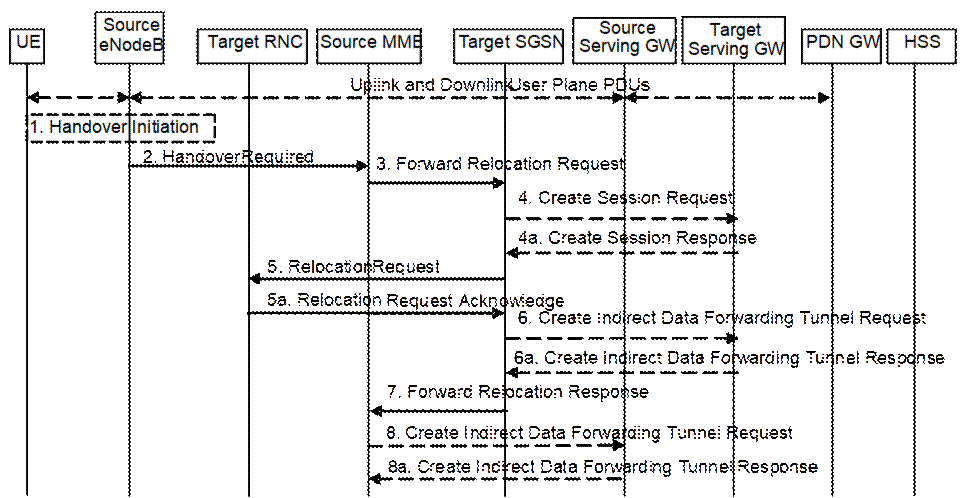
Figure 5.5.2.1.2-1: E-UTRAN to UTRAN Iu mode Inter RAT HO, preparation phase
1. The source eNodeB decides to initiate an Inter-RAT handover to the target access network, UTRAN Iu mode. At this point both uplink and downlink user data is transmitted via the following: Bearer(s) between UE and source eNodeB, GTP tunnel(s) between source eNodeB, Serving GW and PDN GW.
If the UE has an ongoing emergency bearer service the source eNodeB shall not initiate PS handover to a UTRAN cell that is not IMS voice capable.
NOTE 1: The process leading to the handover decision is outside of the scope of this specification.
2. The source eNodeB sends a Handover Required (S1AP Cause, Target RNC Identifier, CSG ID, CSG access mode, Source to Target Transparent Container) message to the source MME to request the CN to establish resources in the target RNC, target SGSN and the Serving GW. The bearers that will be subject to data forwarding (if any) are identified by the target SGSN in a later step (see step 7 below). When the target cell is a CSG cell or a hybrid cell, the source eNodeB shall include the CSG ID of the target cell. If the target cell is a hybrid cell, the CSG access mode shall be indicated.
3. The source MME determines from the 'Target RNC Identifier' IE that the type of handover is IRAT Handover to UTRAN Iu mode. The source MME selects the target SGSN as described in clause 4.3.8.4 on "SGSN Selection Function". The Source MME initiates the Handover resource allocation procedure by sending a Forward Relocation Request (IMSI, Target Identification, CSG ID, CSG Membership Indication, MM Context, PDN Connections, MME Tunnel Endpoint Identifier for Control Plane, MME Address for Control plane, Source to Target Transparent Container, RAN Cause, MS Info Change Reporting Action (if available), CSG Information Reporting Action (if available), UE Time Zone, ISR Supported, Serving Network) message to the target SGSN. The information ISR Supported is indicated if the source MME and associated Serving GW are capable to activate ISR for the UE. When ISR is activated the message should be sent to the SGSN that maintains ISR for the UE when this SGSN is serving the target identified by the Target Identification. This message includes all PDN Connections active in the source system and for each PDN Connection includes the associated APN, the address and the uplink Tunnel endpoint parameters of the Serving GW for control plane, and a list of EPS Bearer Contexts. RAN Cause indicates the S1AP Cause as received from source eNodeB. The old Serving Network is sent to target MME to support the target MME to resolve if Serving Network is changed.
The source MME shall perform access control by checking the UE's CSG subscription when CSG ID is provided by the source eNodeB. If there is no subscription data for this CSG ID or the CSG subscription is expired, and the target cell is a CSG cell, the source MME shall reject the handover with an appropriate cause unless the UE has emergency bearer services.
The source MME includes the CSG ID in the Forward Relocation Request when the target cell is a CSG cell or hybrid cell. When the target cell is a hybrid cell, or if there are one or several emergency bearers and the target cell is a CSG cell, the CSG Membership Indication indicating whether the UE is a CSG member shall be included in the Forward Relocation Request message.
The MM context includes information on the EPS Bearer context(s). The source MME does not include any EPS Bearer Context information for "Non-IP" bearers or for any SCEF connection. If none of the UE's EPS Bearers can be supported by the selected target SGSN, the source MME rejects the handover attempt by sending a Handover Preparation Failure (Cause) message to the Source eNodeB.
NOTE 2: If the handover is successful, the source MME will signal to the SGW and/or SCEF to release any non-included EPS Bearers after step 6 of the Execution procedure. The non-included bearers are locally released by the UE following the Bearer Context Status synchronisation that occurs during the Routing Area Update at step 10 of the Execution procedure.
The target SGSN maps the EPS bearers to PDP contexts 1-to-1 and maps the EPS Bearer QoS parameter values of an EPS bearer to the Release 99 QoS parameter values of a bearer context as defined in Annex E
Prioritization of PDP Contexts is performed by the target core network node, i.e. target SGSN.
The MM context contains security related information, e.g. supported ciphering algorithms as described in TS 29.274 [43]. Handling of security keys is described in TS 33.401 [41].
The target SGSN shall determine the Maximum APN restriction based on the APN Restriction of each bearer context in the Forward Relocation Request, and shall subsequently store the new Maximum APN restriction value.
If SIPTO at the Local Network is active for a PDN connection in the architecture with stand-alone GW the source MME shall include the Local Home Network ID of the source cell in the PDN Connections corresponding to the SIPTO at the Local Network PDN connection.
4. The target SGSN determines if the Serving GW is to be relocated, e.g., due to PLMN change. If the Serving GW is to be relocated, the target SGSN selects the target Serving GW as described under clause 4.3.8.2 on "Serving GW selection function", and sends a Create Session Request message (IMSI, SGSN Tunnel Endpoint Identifier for Control Plane, SGSN Address for Control plane, PDN GW address(es) for user plane, PDN GW UL TEID(s) for user plane, PDN GW address(es) for control plane, and PDN GW TEID(s) for control plane, the Protocol Type over S5/S8, Serving Network) per PDN connection to the target Serving GW. The Protocol Type over S5/S8 is provided to Serving GW which protocol should be used over S5/S8 interface.
The target SGSN establishes the EPS Bearer context(s) in the indicated order. The SGSN deactivates, as provided in step 7 of the execution phase, the EPS Bearer contexts which cannot be established.
4a. The target Serving GW allocates its local resources and returns a Create Session Response (Serving GW address(es) for user plane, Serving GW UL TEID(s) for user plane, Serving GW Address for control plane, Serving GW TEID for control plane) message to the target SGSN.
5. The target SGSN requests the target RNC to establish the radio network resources (RABs) by sending the message Relocation Request (UE Identifier, Cause, CN Domain Indicator, Integrity protection information (i.e. IK and allowed Integrity Protection algorithms), Encryption information (i.e. CK and allowed Ciphering algorithms), RAB to be setup list, CSG ID, CSG Membership Indication, Source RNC to Target RNC Transparent Container, Service Handover related information). If the Access Restriction is present in the MM context, the Service Handover related information shall be included by the target SGSN for the Relocation Request message in order for RNC to restrict the UE in connected mode to handover to the RAT prohibited by the Access Restriction.
For each RAB requested to be established, RABs To Be Setup shall contain information such as RAB ID, RAB parameters, Transport Layer Address, and Iu Transport Association. The RAB ID information element contains the NSAPI value, and the RAB parameters information element gives the QoS profile. The Transport Layer Address is the Serving GW Address for user plane (if Direct Tunnel is used) or the SGSN Address for user plane (if Direct Tunnel is not used), and the Iu Transport Association corresponds to the uplink Tunnel Endpoint Identifier Data in Serving GW or SGSN respectively.
Ciphering and integrity protection keys are sent to the target RNC to allow data transfer to continue in the new RAT/mode target cell without requiring a new AKA (Authentication and Key Agreement) procedure. Information that is required to be sent to the UE (either in the Relocation Command message or after the handover completion message) from RRC in the target RNC shall be included in the RRC message sent from the target RNC to the UE via the transparent container. More details are described in TS 33.401 [41].
The Target SGSN shall include the CSG ID and CSG Membership Indication when provided by the source MME in the Forward Relocation Request message.
In the target RNC radio and Iu user plane resources are reserved for the accepted RABs. Cause indicates the RAN Cause as received from source MME. The Source RNC to Target RNC Transparent Container includes the value from the Source to Target Transparent Container received from the source eNodeB.
If the target cell is a CSG cell, the target RNC shall verify the CSG ID provided by the target SGSN, and reject the handover with an appropriate cause if it does not match the CSG ID for the target cell. If the target cell is in hybrid mode, the target RNC may use the CSG Membership Indication to perform differentiated treatment for CSG and non-CSG members. If the target cell is a CSG cell, and if the CSG Membership Indication is "non member", the target RNC only accepts the emergency bearers.
5a. The target RNC allocates the resources and returns the applicable parameters to the target SGSN in the message Relocation Request Acknowledge (Target RNC to Source RNC Transparent Container, RABs setup list, RABs failed to setup list).
Upon sending the Relocation Request Acknowledge message the target RNC shall be prepared to receive downlink GTP PDUs from the Serving GW, or Target SGSN if Direct Tunnel is not used, for the accepted RABs.
Each RABs setup list is defined by a Transport Layer Address, which is the target RNC Address for user data, and the Iu Transport Association, which corresponds to the downlink Tunnel Endpoint Identifier for user data.
Any EPS Bearer contexts for which a RAB was not established are maintained in the target SGSN and the UE. These EPS Bearer contexts shall be deactivated by the target SGSN via explicit SM procedures upon the completion of the routing area update (RAU) procedure.
6. If 'Indirect Forwarding' and relocation of Serving GW apply and Direct Tunnel is used the target SGSN sends a Create Indirect Data Forwarding Tunnel Request message (Target RNC Address and TEID(s) for DL data forwarding) to the Serving GW. If 'Indirect Forwarding' and relocation of Serving GW apply and Direct Tunnel is not used, then the target SGSN sends a Create Indirect Data Forwarding Tunnel Request message (SGSN Address and TEID(s) for DL data forwarding) to the Serving GW.
Indirect forwarding may be performed via a Serving GW which is different from the Serving GW used as the anchor point for the UE.
6a. The Serving GW returns a Create Indirect Data Forwarding Tunnel Response (Cause, Serving GW Address(es) and Serving GW DL TEID(s) for data forwarding) message to the target SGSN.
7. The target SGSN sends the message Forward Relocation Response (Cause, SGSN Tunnel Endpoint Identifier for Control Plane, SGSN Address for Control Plane, Target to Source Transparent Container, Cause, RAB Setup Information, Additional RAB Setup Information, Address(es) and TEID(s) for User Traffic Data Forwarding, Serving GW change indication) to the source MME. Serving GW change indication indicates a new Serving GW has been selected. The Target to Source Transparent Container contains the value from the Target RNC to Source RNC Transparent Container received from the target RNC.
The IE 'Address(es) and TEID(s) for User Traffic Data Forwarding' defines the destination tunnelling endpoint for data forwarding in target system, and it is set as follows:
- If 'Direct Forwarding' applies, or if 'Indirect Forwarding' and no relocation of Serving GW apply and Direct Tunnel is used, then the IE 'Address(es) and TEID(s) for User Traffic Data Forwarding' contains the addresses and GTP-U tunnel endpoint parameters to the Target RNC received in step 5a.
- If 'Indirect Forwarding' and relocation of Serving GW apply, then the IE 'Address(es) and TEID(s) for User Traffic Data Forwarding' contains the addresses and DL GTP-U tunnel endpoint parameters to the Serving GW received in step 6. This is independent from using Direct Tunnel or not.
- If 'Indirect Forwarding' applies and Direct Tunnel is not used and relocation of Serving GW does not apply, then the IE 'Address(es) and TEID(s) for User Traffic Data Forwarding' contains the DL GTP-U tunnel endpoint parameters to the Target SGSN.
8. If "Indirect Forwarding" applies, the Source MME sends the message Create Indirect Data Forwarding Tunnel Request (Address(es) and TEID(s) for Data Forwarding (received in step 7)), EPS Bearer ID(s)) to the Serving GW used for indirect forwarding.
Indirect forwarding may be performed via a Serving GW which is different from the Serving GW used as the anchor point for the UE.
8a. The Serving GW returns the forwarding parameters by sending the message Create Indirect Data Forwarding Tunnel Response (Cause, Serving GW Address(es) and TEID(s) for Data Forwarding). If the Serving GW doesn't support data forwarding, an appropriate cause value shall be returned and the Serving GW Address(es) and TEID(s) will not be included in the message.
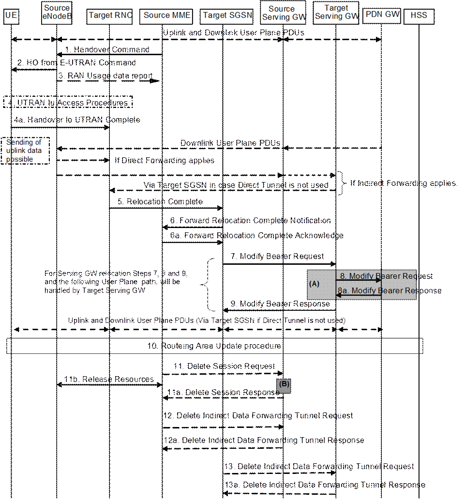
Figure 5.5.2.1.3-1: E-UTRAN to UTRAN Iu mode Inter RAT HO, execution phase
NOTE: For a PMIP-based S5/S8, procedure steps (A) and (B) are defined in TS 23.402 [2]. Step (B) shows PCRF interaction in the case of PMIP-based S5/S8. Steps 8 and 8a concern GTP based S5/S8
The source eNodeB continues to receive downlink and uplink user plane PDUs.
1. The source MME completes the preparation phase towards source eNodeB by sending the message Handover Command (Target to Source Transparent Container, E-RABs to Release List, Bearers Subject to Data Forwarding List). The "Bearers Subject to Data forwarding list" IE may be included in the message and it shall be a list of 'Address(es) and TEID(s) for user traffic data forwarding' received from target side in the preparation phase (Step 7 of the preparation phase) when 'Direct Forwarding' applies, or the parameters received in Step 8a of the preparation phase when 'Indirect Forwarding' applies.
The source eNodeB initiates data forwarding for bearers specified in the "Bearers Subject to Data Forwarding List". The data forwarding may go directly to target RNC or alternatively go via the Serving GW if so decided by source MME and or/ target SGSN in the preparation phase.
2. The source eNodeB will give a command to the UE to handover to the target access network via the message HO from E-UTRAN Command. This message includes a transparent container including radio aspect parameters that the target RNC has set-up in the preparation phase. The details of this E-UTRAN specific signalling are described in TS 36.300 [5].
Upon the reception of the HO from E-UTRAN Command message containing the Handover Command message, the UE shall associate its bearer IDs to the respective RABs based on the relation with the NSAPI and shall suspend the uplink transmission of the user plane data.
3. If the PLMN has configured Secondary RAT usage data reporting and the source eNodeB has Secondary RAT usage data to report, the eNodeB sends the RAN Usage data report message (Secondary RAT usage data) to the MME. Since the handover is an inter-RAT handover, the MME continues with the Secondary RAT usage data reporting procedure as in clause 5.7A.3. The reporting procedure in clause 5.7A.3 is only performed if PGW secondary RAT usage reporting is active.
4. The UE moves to the target UTRAN Iu (3G) system and executes the handover according to the parameters provided in the message delivered in step 2. The procedure is the same as in step 6 and 8 in clause 5.2.2.2 in TS 43.129 [8] with the additional function of association of the received RABs and existing Bearer Id related to the particular NSAPI.
The UE may resume the user data transfer only for those NSAPIs for which there are radio resources allocated in the target RNC.
5. When the new source RNC-ID + S-RNTI are successfully exchanged with the UE, the target RNC shall send the Relocation Complete message to the target SGSN. The purpose of the Relocation Complete procedure is to indicate by the target RNC the completion of the relocation from the source E-UTRAN to the RNC. After the reception of the Relocation Complete message the target SGSN shall be prepared to receive data from the target RNC. Each uplink N-PDU received by the target SGSN is forwarded directly to the Serving GW.
For SIPTO at the Local Network with stand-alone GW architecture, the target RNC shall include the Local Home Network ID of the target cell in the Relocation Complete message.
6. Then the target SGSN knows that the UE has arrived to the target side and target SGSN informs the source MME by sending the Forward Relocation Complete Notification (ISR Activated, Serving GW change) message. If indicated, ISR Activated indicates to the source MME that it shall maintain the UE's context and that it shall activate ISR, which is only possible when the S‑GW is not changed. The source MME will also acknowledge that information. A timer in source MME is started to supervise when resources in Source eNodeB and Source Serving GW (for Serving GW relocation) shall be released.
When the timer expires and ISR Activated is not indicated by the target SGSN the source MME releases all bearer resources of the UE. If Serving GW change is indicated and this timer expires the source MME deletes the EPS bearer resources by sending Delete Session Request (Cause, Operation Indication) messages to the Source Serving GW. The operation Indication flag is not set, that indicates to the Source Serving GW that the Source Serving GW shall not initiate a delete procedure towards the PDN GW. If ISR has been activated before this procedure, the cause indicates to the Source S‑GW that the Source S‑GW shall delete the bearer resources on the other old CN node by sending Delete Bearer Request message(s) to that CN node.
Upon receipt of the Forward Relocation Complete Acknowledge message the target SGSN starts a timer if the target SGSN allocated S‑GW resources for indirect forwarding.
For all bearers that were not included in the Forward Relocation Request message sent in step 3, the MME now releases them by sending a Delete Bearer Command to the SGW, or, the appropriate message to the SCEF.
7. The target SGSN will now complete the Handover procedure by informing the Serving GW (for Serving GW relocation this will be the Target Serving GW) that the target SGSN is now responsible for all the EPS Bearer Contexts the UE has established. This is performed in the message Modify Bearer Request (SGSN Tunnel Endpoint Identifier for Control Plane, NSAPI(s), SGSN Address for Control Plane, SGSN Address(es) and TEID(s) for User Traffic for the accepted EPS bearers (if Direct Tunnel is not used) or RNC Address(es) and TEID(s) for User Traffic for the accepted EPS bearers (if Direct Tunnel is used) and RAT type, ISR Activated) per PDN connection. As it is a mobility from E-UTRAN, if the target SGSN supports location information change reporting, the target SGSN shall include the User Location Information (according to the supported granularity) in the Modify Bearer Request, regardless of whether location information change reporting had been requested in the previous RAT by the PDN GW. If the PDN GW requested User CSG information (determined from the UE context), the SGSN also includes the User CSG Information IE in this message. If the UE Time Zone has changed, the SGSN includes the UE Time Zone IE in this message. If Serving GW is not relocated but the Serving Network has changed or if the SGSN has not received any old Serving Network information from the old MME, the SGSN includes the new Serving Network IE in this message. In network sharing scenarios Serving Network denotes the serving core network. If indicated, the information ISR Activated indicates that ISR is activated, which is only possible when the S‑GW is not changed. When the Modify Bearer Request does not indicate ISR Activated and S‑GW is not changed, the S‑GW deletes any ISR resources by sending a Delete Bearer Request to the other CN node that has bearer resources on the S‑GW reserved.
The SGSN releases the non-accepted EPS Bearer contexts by triggering the Bearer Context deactivation procedure. If the Serving GW receives a DL packet for a non-accepted bearer, the Serving GW drops the DL packet and does not send a Downlink Data Notification to the SGSN.
8. The Serving GW (for Serving GW relocation this will be the Target Serving GW) may inform the PDN GW(s) the change of for example for Serving GW relocation or the RAT type that e.g. can be used for charging, by sending the message Modify Bearer Request per PDN connection. The S‑GW also includes User Location Information IE and/or UE Time Zone IE and/or User CSG Information IE if they are present in step 7. Serving Network should be included if it is received in step 7 or in step 4 in clause 5.5.2.1.2. For Serving GW relocation, the Serving GW allocates DL TEIDs on S5/S8 even for non-accepted bearers and may include the PDN Charging Pause Support Indication. The PDN GW must acknowledge the request with the message Modify Bearer Response. In the case of Serving GW relocation, the PDN GW updates its context field and returns a Modify Bearer Response (Charging Id, MSISDN, PDN Charging Pause Enabled Indication (if PDN GW has chosen to enable the function), etc.) message to the Serving GW. The MSISDN is included if the PDN GW has it stored in its UE context. If location information change reporting is required and supported in the target SGSN, the PDN GW shall provide MS Info Change Reporting Action in the Modify Bearer Response.
If PCC infrastructure is used, the PDN GW informs the PCRF about the change of, for example, the RAT type.
If the Serving GW is relocated, the PDN GW shall send one or more "end marker" packets on the old path immediately after switching the path. The source Serving GW shall forwards the "end marker" packets to the source eNodeB.
9. The Serving GW (for Serving GW relocation this will be the Target Serving GW) acknowledges the user plane switch to the target SGSN via the message Modify Bearer Response (Cause, Serving GW Tunnel Endpoint Identifier for Control Plane, Serving GW Address for Control Plane, Protocol Configuration Options, MS Info Change Reporting Action). At this stage the user plane path is established for all EPS Bearer contexts between the UE, target RNC, target SGSN if Direct Tunnel is not used, Serving GW (for Serving GW relocation this will be the Target Serving GW) and PDN GW.
If the Serving GW does not change, the Serving GW shall send one or more "end marker" packets on the old path immediately after switching the path.
10. When the UE recognises that its current Routing Area is not registered with the network, or when the UE's TIN indicates "GUTI", the UE initiates a Routing Area Update procedure with the target SGSN informing it that the UE is located in a new routing area. It is RAN functionality to provide the PMM-CONNECTED UE with Routing Area information.
The target SGSN knows that an IRAT Handover has been performed for this UE as it received the bearer context(s) by handover messages and therefore the target SGSN performs only a subset of the RAU procedure, specifically it excludes the context transfer procedures between source MME and target SGSN.
For a UE supporting CIoT EPS Optimisations, the UE uses the bearer status information in the RAU Accept to identify any non-transferred bearers that it shall locally release.
11. When the timer started at step 6 expires, the source MME sends a Release Resources message to the Source eNodeB. The Source eNodeB releases its resources related to the UE.
When the timer started in step 6 expires and if the source MME received the Serving GW change indication in the Forward Relocation Response message, it deletes the EPS bearer resources by sending Delete Session Request (Cause, Operation Indication, Secondary RAT usage data) messages to the Source Serving GW. The operation indication flag is not set, that indicates to the Source Serving GW that the Source Serving GW shall not initiate a delete procedure towards the PDN GW. Secondary RAT usage data is included if it was received in step 3. The Source Serving GW acknowledges with Delete Session Response (Cause) messages. If ISR has been activated before this procedure, the cause indicates to the Source S‑GW that the Source S‑GW shall delete the bearer resources on the other old CN node by sending Delete Bearer Request message(s) to that CN node.
12. If indirect forwarding was used then the expiry of the timer at source MME started at step 6 triggers the source MME to send a Delete Indirect Data Forwarding Tunnel Request message to the S‑GW to release the temporary resources used for indirect forwarding.
13. If indirect forwarding was used and the Serving GW is relocated, then the expiry of the timer at target SGSN started at step 6 triggers the target SGSN to send a Delete Indirect Data Forwarding Tunnel Request message to the target S‑GW to release temporary resources used for indirect forwarding.
The Target RNC may reject the use of the
Handover procedure if none of the requested RABs in the Relocation Request
message could be established. In this case no UE context is established in the
target SGSN/RNC and no resources are allocated. The UE remains in the Source
eNodeB/MME.
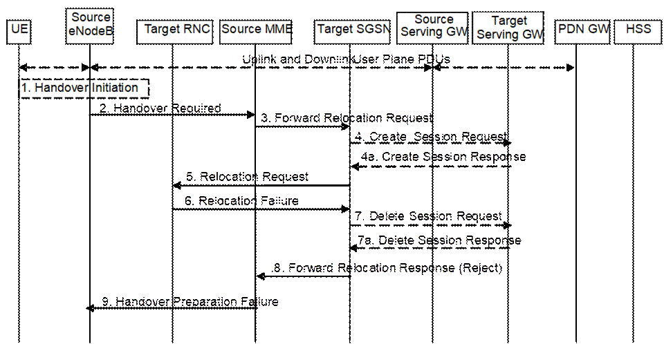
Figure 5.5.2.1.4-1: E-UTRAN to UTRAN Iu mode Inter RAT HO reject
1. The Step 1 to 5 in the flow are identical to the ones in clause 5.5.2.1.2.
6. If the Target RNC fails to allocate any resources for any of the requested RABs it sends a Relocation Failure (Cause) message to the Target SGSN. When the Target SGSN receives the Relocation Failure message from Target RNC the Target SGSN clears any reserved resources for this UE.
7. This step is only performed for Serving GW relocation, i.e. if Steps 4/4a have been performed. The Target SGSN deletes the EPS bearer resources by sending Delete Session Request (Cause) messages to the Target Serving GW. The Target Serving GW acknowledges with Delete Session Response (Cause) messages.
8. The Target SGSN sends the Forward Relocation Response (Cause) message to the Source MME.
9. When the Source MME receives the Forward Relocation Response message it send a Handover Preparation Failure (Cause) message to the Source eNodeB.
The UTRAN Iu mode to E-UTRAN Inter RAT handover procedure takes place when the network decides to perform a handover. The decision to perform PS handover from UTRAN Iu mode to E-UTRAN is taken by the network based on radio condition measurements reported by the UE to the UTRAN RNC.
If emergency bearer services are ongoing for the UE, the MME checks as part of the Tracking Area Update in the execution phase, if the handover is to a restricted area and if so MME releases the non-emergency bearers as specified in clause 5.10.3.
If emergency bearer services are ongoing for the UE, the source SGSN evaluates the handover to the target CSG cell independent of the UE's CSG subscription. If the handover is to a CSG cell that the UE is not subscribed, the target eNodeB only accepts the emergency bearers and the target MME releases the non-emergency PDN connections that were not accepted by the target eNodeB as specified in clause 5.10.3.
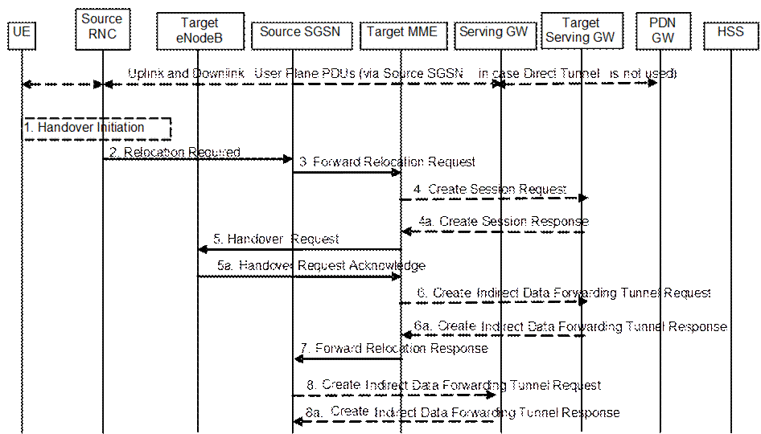
Figure 5.5.2.2.2-1: UTRAN Iu mode to E-UTRAN Inter RAT HO, preparation phase
1. The source RNC decides to initiate an Inter-RAT handover to the E-UTRAN. At this point both uplink and downlink user data is transmitted via the following: Bearers between UE and source RNC, GTP tunnel(s) between source RNC, source SGSN (only if Direct Tunnel is not used), Serving GW and PDN GW.
NOTE 1: The process leading to the handover decision is outside of the scope of this specification.
2. The source RNC sends a Relocation Required (Cause, Target eNodeB Identifier, CSG ID, CSG access mode, Source RNC Identifier, Source RNC to Target RNC Transparent Container) message to the source SGSN to request the CN to establish resources in the target eNodeB, Target MME and the Serving GW. The bearers that will be subject to data forwarding (if any) are identified by the target MME in a later step (see step 7 below). When the target cell is a CSG cell or a hybrid cell, the source RNC shall include the CSG ID of the target cell. If the target cell is a hybrid cell, the CSG access mode shall be indicated.
3. The source SGSN determines from the 'Target eNodeB Identifier' IE that the type of handover is IRAT Handover to E-UTRAN. The source SGSN selects the target MME as described in clause 4.3.8.3 on "MME Selection Function". The Source SGSN initiates the Handover resource allocation procedure by sending Forward Relocation Request (IMSI, Target Identification, CSG ID, CSG Membership Indication, MM Context, PDN Connections, SGSN Tunnel Endpoint Identifier for Control Plane, SGSN Address for Control plane, Source to Target Transparent Container, RAN Cause, MS Info Change Reporting Action (if available), CSG Information Reporting Action (if available), UE Time Zone, ISR Supported, Serving Network, Change to Report (if present)) message to the target MME. This message includes all EPS Bearer contexts corresponding to all the bearers established in the source system and the uplink Tunnel endpoint parameters of the Serving GW. If the information ISR Supported is indicated, this indicates that the source SGSN and associated Serving GW are capable to activate ISR for the UE. When ISR is activated the message should be sent to the MME that maintains ISR for the UE when this MME is serving the target identified by the Target Identification. RAN Cause indicates the Cause as received from source RNC. The Source to Target Transparent Container contains the value from the Source RNC to Target RNC Transparent Container received from the Source RNC. The old Serving Network is sent to target MME to support the target MME to resolve if Serving Network is changed.
Change to Report flag is included by the source SGSN if reporting of change of UE Time Zone, or Serving Network, or both towards Serving GW / PDN GW was deferred by the source SGSN.
The source SGSN shall perform access control by checking the UE's CSG subscription when CSG ID is provided by the source RNC. If there is no subscription data for this CSG ID or the CSG subscription is expired, and the target cell is a CSG cell, the source SGSN shall reject the handover with an appropriate cause unless the UE has emergency bearer services.
The source SGSN includes the CSG ID in the Forward Relocation Request when the target cell is a CSG cell or hybrid cell. When the target cell is a hybrid cell, or if there are one or several emergency bearers and the target cell is a CSG cell, the CSG Membership Indication indicating whether the UE is a CSG member shall be included in the Forward Relocation Request message.
This message includes all PDN Connections active in the source system and for each PDN Connection includes the associated APN, the address and the uplink tunnel endpoint parameters of the Serving GW for control plane, and a list of EPS Bearer Contexts.
Prioritization of EPS Bearer Contexts is performed by the target core network node.
The MM context contains security related information, e.g. UE Network capabilities and used UMTS integrity and ciphering algorithm(s) as well as keys, as described in clause 5.7.2 (Information Storage for MME).
The target MME selects the NAS ciphering and integrity algorithms to use. These algorithms will be sent transparently from the target eNodeB to the UE in the Target to Source Transparent Container (EPC part).
The MME establishes the EPS bearer(s) in the prioritized order. The MME deactivates, as provided in step 8 of the execution phase, the EPS bearers which cannot be established.
The target MME shall determine the Maximum APN restriction based on the APN Restriction of each bearer context received in the Forward Relocation Request, and shall subsequently store the new Maximum APN restriction value.
If SIPTO at the Local Network is active for a PDN connection in the architecture with stand-alone GW the source SGSN shall include the Local Home Network ID of the source cell in the PDN Connections corresponding to the SIPTO at the Local Network PDN connection.
4. The target MME determines if the Serving GW is to be relocated, e.g., due to PLMN change. If the Serving GW is to be relocated, the target MME selects the target Serving GW as described under clause 4.3.8.2 on "Serving GW selection function". The target MME sends a Create Session Request message (IMSI, MME Address and TEID, MME Tunnel Endpoint Identifier for Control Plane, MME Address for Control plane, PDN GW address(es) for user plane, PDN GW UL TEID(s) for user plane, PDN GW address for control plane, and PDN GW TEID(s) for control plane, the Protocol Type over S5/S8, Serving Network) per PDN connection to the target Serving GW. The Protocol Type over S5/S8 is provided to Serving GW which protocol should be used over S5/S8 interface.
4a. The target Serving GW allocates its local resources and returns them in a Create Session Response (Serving GW address(es) for user plane, Serving GW UL TEID(s) for user plane, Serving GW Address for control plane, Serving GW TEID for control plane) message to the target MME.
5. The target MME requests the target eNodeB to establish the bearer(s) by sending the message Handover Request (UE Identifier, S1AP Cause, KeNB, allowed AS Integrity Protection and Ciphering algorithm(s), NAS Security Parameters to E-UTRAN, EPS Bearers to be setup list, CSG ID, CSG Membership Indication, Source to Target Transparent Container). The NAS Security Parameters to E‑UTRAN includes the NAS Integrity Protection and Ciphering algorithm(s), eKSI and NONCEMME are targeted for the UE. S1AP Cause indicates the RAN Cause as received from source SGSN. The Source to Target Transparent Container contains the value from the RAN Transparent Container received from the source SGSN.
NOTE 2: The target MME derives K'ASME from CK and IK in the MM context and associates it with eKSI, as described in TS 33.401 [41] and selects NAS Integrity Protection and Ciphering algorithm(s). The MME and UE derive the NAS keys and KeNB from K'ASME. If the MME shares an EPS security association with the UE, the MME may activate this native EPS security context by initiating a NAS SMC procedure after having completed the handover procedure.
For each EPS bearer requested to be established, 'EPS Bearers To Be Setup' IE shall contain information such as ID, bearer parameters, Transport Layer Address, "Data forwarding not possible" indication, and S1 Transport Association. The target MME ignores any Activity Status Indicator within an EPS Bearer Context and requests the target eNodeB to allocate resources for all EPS Bearer Contexts received from the source side. The Transport Layer Address is the Serving GW Address for user data, and the S1 Transport Association corresponds to the uplink Tunnel Endpoint Identifier Data. "Data forwarding not possible" indication shall be included if the target MME decides the corresponding bearer will not be subject to data forwarding.
The target MME shall include the CSG ID and CSG Membership Indication when provided by the source SGSN in the Handover Request message.
The information about the selected NAS ciphering and integrity protection algorithm(s), KSI and NONCEMME will be sent transparently from the target eNodeB to the UE in the Target to Source Transparent Container, and in the message UTRAN HO Command from source RNC to the UE. This will then allow data transfer to continue in the new RAT/mode target cell without requiring a new AKA (Authentication and Key Agreement) procedure. More details are described in TS 33.401 [41].
If the target cell is a CSG cell, the target eNodeB shall verify the CSG ID provided by the target MME, and reject the handover with an appropriate cause if it does not match the CSG ID for the target cell. If the target eNodeB is in hybrid mode, it may use the CSG Membership Status to perform differentiated treatment for CSG and non-CSG members. If the target cell is a CSG cell, and if the CSG Membership Indication is "non member", the target eNodeB only accepts the emergency bearers.
5a. The target eNodeB allocates the requested resources and returns the applicable parameters to the target MME in the message Handover Request Acknowledge (Target to Source Transparent Container, EPS Bearers setup list, EPS Bearers failed to setup list). The target eNodeB shall ignore it if the number of radio bearers in the Source to Target Transparent container does not comply with the number of bearers requested by the MME and allocate bearers as requested by the MME. Upon sending the Handover Request Acknowledge message the target eNodeB shall be prepared to receive downlink GTP PDUs from the Serving GW for the accepted EPS bearers.
The target eNodeB selects AS integrity and ciphering algorithm(s). In addition to the information provided by the MME (eKSI, NAS Integrity Protection and Ciphering algorithm(s) and NONCEMME), the target eNodeB inserts AS integrity and ciphering algorithm(s) into the UTRAN RRC message, which is contained in the Target to Source Transparent Container.
6. If 'Indirect Forwarding' and relocation of Serving GW apply the target MME sends a Create Indirect Data Forwarding Tunnel Request message (Target eNodeB Address, TEID(s) for DL data forwarding) to the Serving GW.
Indirect forwarding may be performed via a Serving GW which is different from the Serving GW used as the anchor point for the UE.
6a. The Serving GW returns a Create Indirect Data Forwarding Tunnel Response (Cause, Serving GW Address(es) and Serving GW DL TEID(s) for data forwarding) message to the target MME.
7. The target MME sends the message Forward Relocation Response (Cause, List of Set Up RABs, EPS Bearers setup list, MME Tunnel Endpoint Identifier for Control Plane, RAN Cause, MME Address for control plane, Target to Source Transparent Container, Address(es) and TEID(s) for Data Forwarding, Serving GW change indication) to the source SGSN. Serving GW change indication indicates whether a new Serving GW has been selected. The Target to Source Transparent Container includes the value from the Target to Source Transparent Container received from the target eNodeB.
The IE 'Address(es) and TEID(s) for User Traffic Data Forwarding' defines the destination tunnelling endpoint for data forwarding in target system, and it is set as follows. If 'Direct Forwarding' or if 'Indirect Forwarding' but no relocation of Serving GW applies, then the IEs 'Address(es) and TEID(s) for Data Forwarding' contains the forwarding DL GTP-U tunnel endpoint parameters to the eNodeB received in step 5a.
If 'Indirect Forwarding' and relocation of Serving GW apply the IEs 'Address(es) and TEID(s) for Data Forwarding' contains the DL GTP-U tunnel endpoint parameters to the Target eNodeB or to the forwarding Serving GW received in step 6a.
8. If "Indirect Forwarding" applies, the source SGSN shall send the message Create Indirect Data Forwarding Tunnel Request (Address(es) and TEID(s) for Data Forwarding (received in step 7)) to the Serving GW used for indirect forwarding.
Indirect forwarding may be performed via a Serving GW which is different from the Serving GW used as the anchor point for the UE.
8a. The Serving GW returns the forwarding user plane parameters by sending the message Create Indirect Data Forwarding Tunnel Response (Cause, Serving GW Address(es) and TEID(s) for data forwarding). If the Serving GW doesn't support data forwarding, an appropriate cause value shall be returned and the Serving GW Address(es) and TEID(s) will not be included in the message.
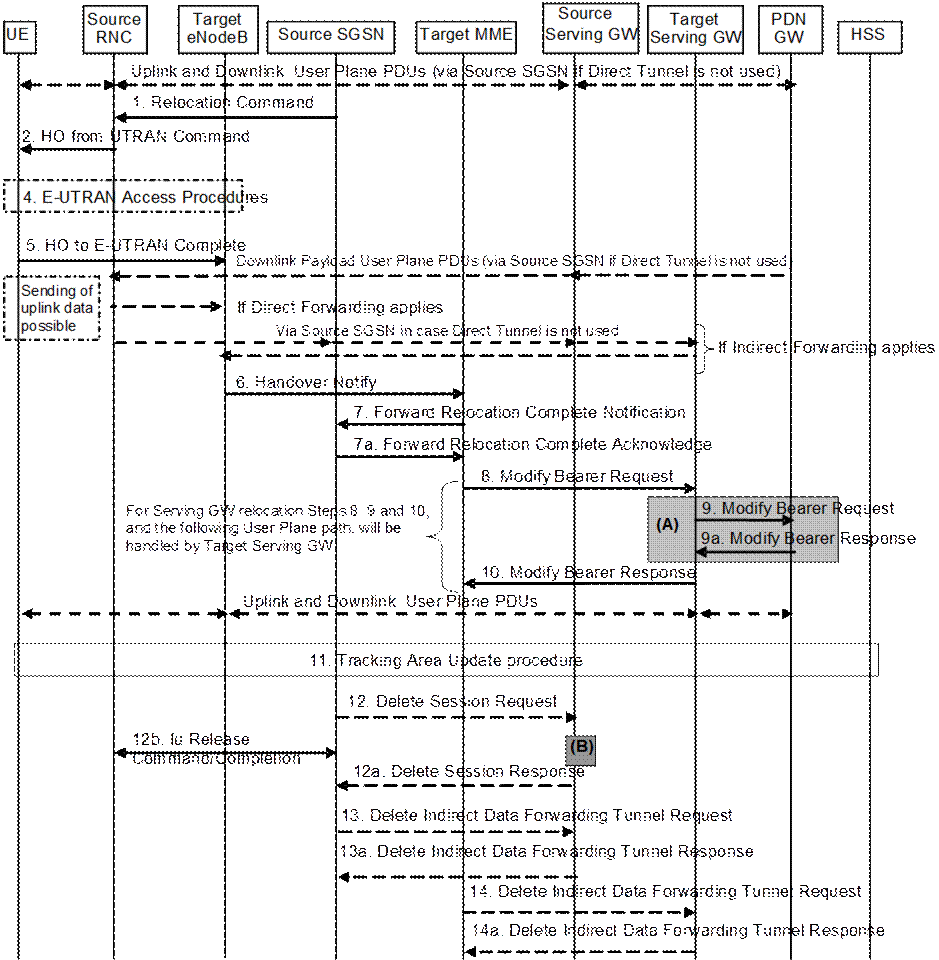
Figure 5.5.2.2.3-1: UTRAN Iu mode to E-UTRAN Inter RAT HO, execution phase
NOTE: For a PMIP-based S5/S8, procedure steps (A) and (B) are defined in TS 23.402 [2]. Step (B) shows PCRF interaction in the case of PMIP-based S5/S8. Steps 9 and 9a concern GTP based S5/S8.
The source RNC continues to receive downlink and uplink user plane PDUs.
1. The source SGSN completes the preparation phase towards source RNC by sending the message Relocation Command (Target RNC to Source RNC Transparent Container, RABs to be Released List, RABs Subject to Data Forwarding List). The "RABs to be Released list" IE will be the list of all NSAPIs (RAB Ids) for which a Bearer was not established in Target eNodeB. The "RABs Subject to Data forwarding list" IE may be included in the message and it shall be a list of 'Address(es) and TEID(s) for user traffic data forwarding' received from target side in step 7 of the preparation phase when 'Direct Forwarding' applies. If 'Indirect Forwarding' is applicable and Direct Tunnel is used the "RABs Subject to Data Forwarding List" IE includes the parameters received in Step 8a of the preparation phase. If 'Indirect Forwarding' is applicable and Direct Tunnel is not used the "RABs Subject to Data Forwarding List" IE includes the source SGSN address(es) and TEID(s) allocated for indirect data forwarding by Source SGSN. The Target RNC to Source RNC Transparent Container contains the value from the Target to Source Transparent Container received from the target MME.
2. The source RNC will command to the UE to handover to the target eNodeB via the message HO from UTRAN Command. The access network specific message to UE includes a transparent container including radio aspect parameters that the target eNodeB has set-up in the preparation phase.
The source RNC may initiate data forwarding for the indicated RABs/EPS Bearer contexts specified in the "RABs Subject to Data Forwarding List". The data forwarding may go directly to target eNodeB, or alternatively go via the Serving GW if so decided by source SGSN and/or target MME in the preparation phase.
Upon the reception of the HO from UTRAN Command message containing the Relocation Command message, the UE shall associate its RAB IDs to the respective bearers ID based on the relation with the NSAPI and shall suspend the uplink transmission of the user plane data.
3. Void.
4. The UE moves to the E-UTRAN and performs access procedures toward target eNodeB.
5. When the UE has got access to target eNodeB
it sends the message HO to E-UTRAN Complete.
The UE shall implicitly derive the EPS bearers for which an E-RAB was not
established from the HO from UTRAN Command and deactivate them locally without
an explicit NAS message at this step.
6. When the UE has successfully accessed the target eNodeB, the target eNodeB informs the target MME by sending the message Handover Notify (TAI+ECGI, Local Home Network ID).
For SIPTO at the Local Network with stand-alone GW architecture, the target eNodeB shall include the Local Home Network ID of the target cell in the Handover Notify message.
7. Then the target MME knows that the UE has arrived to the target side and target MME informs the source SGSN by sending the Forward Relocation Complete Notification (ISR Activated, Serving GW change) message. If ISR Activated is indicated, this indicates to the source SGSN that it shall maintain the UE's contexts and activate ISR, which is only possible when the S‑GW is not changed. The source SGSN shall also acknowledge that information. A timer in source SGSN is started to supervise when resources in the in Source RNC and Source Serving GW (for Serving GW relocation) shall be released
Upon receipt of the Forward Relocation Complete Acknowledge message the target MME starts a timer if the target MME applies indirect forwarding.
8. The target MME will now complete the Inter-RAT Handover procedure by informing the Serving GW (for Serving GW relocation this will be the Target Serving GW) that the target MME is now responsible for all the bearers the UE have established. This is performed in the message Modify Bearer Request (Cause, MME Tunnel Endpoint Identifier for Control Plane, EPS Bearer ID, MME Address for Control Plane, eNodeB Address(es) and TEID(s) for User Traffic for the accepted EPS bearers and RAT type, ISR Activated) per PDN connection. As it is a mobility from UTRAN, if the target MME supports location information change reporting, the target MME shall include the User Location Information (according to the supported granularity) in the Modify Bearer Request, regardless of whether location information change reporting had been requested in the previous RAT by the PDN GW. If the PDN GW requested User CSG information (determined from the UE context), the MME also includes the User CSG Information IE in this message. If either the UE Time Zone has changed or Forward Relocation Request message from source SGSN indicated pending UE Time Zone change reporting (via Change to Report flag), the MME includes the UE Time Zone IE in this message. If either Serving GW is not relocated but the Serving Network has changed or Forward Relocation Request message from source SGSN indicated pending Serving Network change reporting (via Change to Report flag), the MME includes the new Serving Network IE in this message. If indicated, the information ISR Activated indicates that ISR is activated, which is only possible when the S‑GW was not changed. When the Modify Bearer Request does not indicate ISR Activated and S‑GW is not changed, the S‑GW deletes any ISR resources by sending a Delete Bearer Request to the other CN node that has bearer resources on the S‑GW reserved.
The MME releases the non-accepted dedicated bearers by triggering the bearer release procedure as specified in clause 5.4.4.2. If the Serving GW receives a DL packet for a non-accepted bearer, the Serving GW drops the DL packet and does not send a Downlink Data Notification to the MME.
If the default bearer of a PDN connection has not been accepted by the target eNodeB and there are other PDN connections active, the MME shall handle it in the same way as if all bearers of a PDN connection have not been accepted. The MME releases these PDN connections by triggering the MME requested PDN disconnection procedure specified in clause 5.10.3.
9. The Serving GW (for Serving GW relocation this will be the Target Serving GW) may inform the PDN GW the change of for example for Serving GW relocation or the RAT type that e.g. can be used for charging, by sending the message Modify Bearer Request per PDN connection. The S‑GW also includes User Location Information IE and/or UE Time Zone IE and/or User CSG Information IE if they are present in step 8. Serving Network should be included if it is received in step 8 or in step 4 in clause 5.5.2.2.2. For Serving GW relocation, the Serving GW allocates DL TEIDs on S5/S8 even for non-accepted bearers and may include the PDN Charging Pause Support Indication. The PDN GW must acknowledge the request with the message Modify Bearer Response. In the case of Serving GW relocation, the PDN GW updates its context field and returns a Modify Bearer Response (Charging Id, MSISDN, PDN Charging Pause Enabled Indication (if PDN GW has chosen to enable the function), etc.) message to the Serving GW. The MSISDN is included if the PDN GW has it stored in its UE context. If location information change reporting is required and supported in the target MME, the PDN GW shall provide MS Info Change Reporting Action in the Modify Bearer Response.
If PCC infrastructure is used, the PDN GW informs the PCRF about the change of, for example, the RAT type.
If the Serving GW is relocated, the PDN GW shall send one or more "end marker" packets on the old path immediately after switching the path in order to assist the reordering function in the target eNodeB. The source Serving GW shall forward the "end marker" packets to the source SGSN or RNC.
10. The Serving GW (for Serving GW relocation this will be the Target Serving GW) acknowledges the user plane switch to the target MME via the message Modify Bearer Response (Cause, Serving GW Tunnel Endpoint Identifier for Control Plane, Serving GW Address for Control Plane, Protocol Configuration Options, MS Info Change Reporting Action). At this stage the user plane path is established for all bearers between the UE, target eNodeB, Serving GW (for Serving GW relocation this will be the Target Serving GW) and PDN GW.
If the Serving GW does not change, the Serving GW shall send one or more "end marker" packets on the old path immediately after switching the path in order to assist the reordering function in the target eNodeB.
11. The UE initiates a Tracking Area Update procedure when one of the conditions listed in clause "Triggers for tracking area update" applies.
The target MME knows that an IRAT Handover has been performed for this UE as it received the bearer context(s) by handover messages and therefore the target MME performs only a subset of the TA update procedure, specifically it excludes the context transfer procedures between source SGSN and target MME.
If the Subscription Data received from the HSS (during the TAU in step 11) contains information that is necessary for the E-UTRAN to be aware of (e.g. a restriction in the UE's permission to use NR as a secondary RAT, Unlicensed Spectrum or a combination of them), or an existing UE context in the MME indicates that the UE is not permitted to use NR as a secondary RAT or Unlicensed Spectrum or a combination of them and the MME has not provided this information to the target eNodeB during step 5 of the handover preparation phase, then the MME sends an updated Handover Restriction List in the Downlink NAS Transport message that it sends to RAN. If the UE is not allowed to use NR as Secondary RAT, the MME indicates that to the UE in TAU Accept message.
12. When the timer started in step 7 expires the source SGSN will clean‑up all its resources towards source RNC by sending the Iu Release Command to the RNC. When there is no longer any need for the RNC to forward data, the source RNC responds with an Iu Release Complete message.
When the timer started in step 7 expires and if the source SGSN received the Serving GW change indication in the Forward Relocation Response message, it deletes the EPS bearer resources by sending Delete Session Request (Cause, Operation Indication) messages to the Source Serving GW. The operation Indication flag is not set, that indicates to the Source Serving GW that the Source Serving GW shall not initiate a delete procedure towards the PDN GW. The Source Serving GW acknowledges with Delete Session Response (Cause) messages. If ISR has been activated before this procedure, the cause indicates to the Source S‑GW that the Source S‑GW shall delete the bearer resources on the other old CN node by sending Delete Bearer Request message(s) to that CN node.
13. If indirect forwarding was used then the expiry of the timer at source SGSN started at step 7 triggers the source SGSN to send a Delete Indirect Data Forwarding Tunnel Request message to the S‑GW to release the temporary resources used for indirect forwarding.
14. If indirect forwarding was used and the Serving GW is relocated, then the expiry of the timer at target MME started at step 7 triggers the target MME to send a Delete Indirect Data Forwarding Tunnel Request message to the target S‑GW to release temporary resources used for indirect forwarding.
The Target eNodeB may reject the use of the
Handover procedure if none of the requested EPS bearers in the Handover Request
message could be established. In this case no UE context is established in the
target MME/eNodeB and no resources are allocated. The UE remains in the Source
RNC/SGSN.
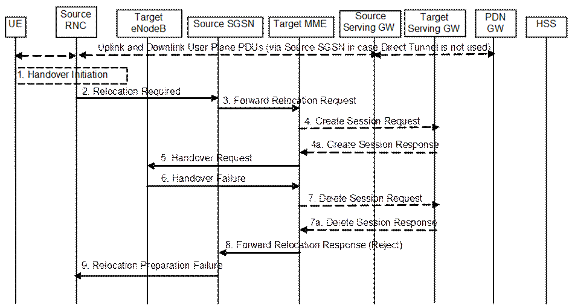
Figure 5.5.2.2.4-1: UTRAN Iu mode to E-UTRAN Inter RAT HO reject
1. Steps 1 to 5 in the flow are identical to the ones in clause 5.5.2.2.2.
6. If the Target eNodeB fails to allocate any resources for any of the requested EPS Bearers it sends a Handover Failure (Cause) message to the Target MME. When the Target MME receives the Handover Failure message from Target eNodeB the Target MME clears any reserved resources for this UE.
7. This step is only performed for Serving GW relocation, i.e. if Steps 4/4a have been performed. The Target MME deletes the EPS bearer resources by sending Delete Session Request (Cause) messages to the Target Serving GW. The Target Serving GW acknowledges with Delete Session Response (Cause) messages.
8. The Target MME sends the Forward Relocation Response (Cause) message to the Source SGSN.
9. When the Source SGSN receives the Forward Relocation Response message it send a Relocation Preparation Failure (Cause) message to the Source RNC.
The procedure is based on Packet-switched handover for GERAN A/Gb mode defined in TS 43.129 [8].
Pre-conditions:
- The UE is in ECM-CONNECTED state (E-UTRAN mode);
- The BSS must support PFM, Packet Flow Management, procedures.
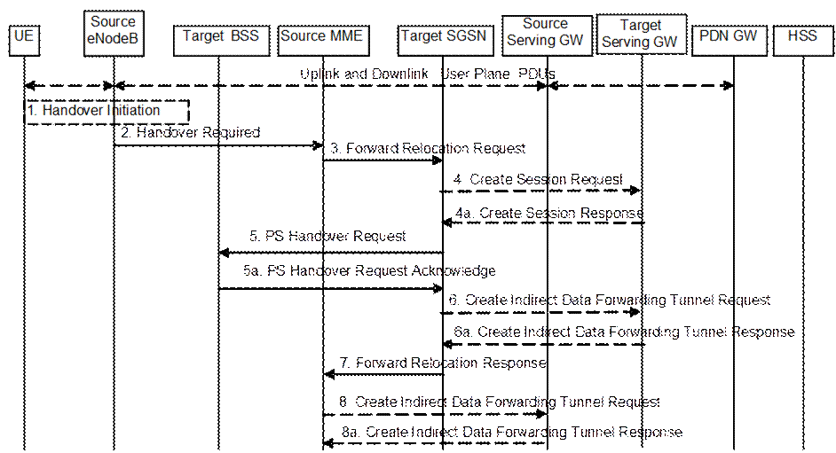
Figure 5.5.2.3.2-1: E-UTRAN to GERAN A/Gb Inter RAT HO, preparation phase
1. The source eNodeB decides to initiate an Inter RAT Handover to the target GERAN A/Gb mode (2G) system. At this point both uplink and downlink user data is transmitted via the following: Bearer(s) between UE and Source eNodeB, GTP tunnel(s) between Source eNodeB, Serving GW and PDN GW.
If the UE has an ongoing emergency bearer service the source eNodeB shall not initiate PS handover to GERAN.
NOTE 1: The process leading to the handover decision is outside of the scope of this specification
2. The source eNodeB sends a Handover Required (S1AP Cause, Target System Identifier, Source to Target Transparent Container) message to the Source MME to request the CN to establish resources in the Target BSS, Target SGSN and the Serving GW. The bearers that will be subject to data forwarding (if any) are identified by the target SGSN in a later step (see step 7 below).
The 'Target System Identifier' IE contains the identity of the target global cell Id.
3. The Source MME determines from the 'Target System Identifier' IE that the type of handover is IRAT Handover to GERAN A/Gb mode. The Source MME selects the Target SGSN as described in clause 4.3.8.4 on "SGSN Selection Function". The Source MME initiates the Handover resource allocation procedure by sending a Forward Relocation Request (IMSI, Target Identification (shall be set to "empty"), MM Context, PDN Connections, MME Tunnel Endpoint Identifier for Control Plane, MME Address for Control plane, Source to Target Transparent Container, Packet Flow ID, XID parameters (if available), Target Cell Identification, MS Info Change Reporting Action (if available), CSG Information Reporting Action (if available), UE Time Zone, ISR Supported, RAN Cause, Serving Network) message to the target SGSN. If the information ISR Supported is indicated, this indicates that the source MME and associated Serving GW are capable to activate ISR for the UE. When ISR is activated the message should be sent to the SGSN that maintains ISR for the UE when this SGSN is serving the target identified by the Target Identification. This message includes all PDN Connections active in the source system and for each PDN Connection includes the associated APN, the address and the uplink Tunnel endpoint parameters of the Serving GW for control plane, and a list of EPS Bearer Contexts. The old Serving Network is sent to target MME to support the target MME to resolve if Serving Network is changed. In network sharing scenarios Serving Network denotes the serving core network.
The MM context includes information on the EPS Bearer context(s). If none of the UE's EPS Bearers can be supported by the selected target SGSN, the source MME rejects the handover attempt by sending a Handover Preparation Failure (Cause) message to the Source eNodeB.
NOTE 2: If the handover is successful, the source MME will signal to the SGW and/or SCEF to release any non-included EPS Bearers after step 8 of the Execution procedure. The non-included bearers are locally released by the UE following the Bearer Context Status synchronisation that occurs during the Routing Area Update at step 13 of the Execution procedure.
The target SGSN maps the EPS bearers to PDP contexts 1-to-1 and maps the EPS Bearer QoS parameter values of an EPS bearer to the Release 99 QoS parameter values of a bearer context as defined in Annex E.
Prioritization of PDP Contexts is performed by the target core network node, i.e. target SGSN.
If the Source MME supports IRAT Handover to GERAN A/Gb procedure it has to allocate a valid PFI during the bearer activation procedure. RAN Cause indicates the S1AP Cause as received from the source eNodeB. The Source to Target Transparent Container includes the value from the Source to Target Transparent Container received from the source eNodeB.
The MM context contains security related information, e.g. supported ciphering algorithms, as described in TS 29.274 [43]. Handling of security keys is described in TS 33.401 [41].
The target SGSN selects the ciphering algorithm to use. This algorithm will be sent transparently from the target SGSN to the UE in the NAS container for Handover (part of the Target to Source Transparent Container). The IOV-UI parameter, generated in the target SGSN, is used as input to the ciphering procedure and it will also be transferred transparently from the target SGSN to the UE in the NAS container for Handover. More details are described in TS 33.401 [41].
When the target SGSN receives the Forward Relocation Request message the required EPS Bearer, MM, SNDCP and LLC contexts are established and a new P-TMSI is allocated for the UE. When this message is received by the target SGSN, it begins the process of establishing PFCs for all EPS Bearer contexts.
When the target SGSN receives the Forward Relocation Request message it extracts from the EPS Bearer Contexts the NSAPIs and SAPIs and PFIs to be used in the target SGSN. If for a given EPS Bearer Context the target SGSN does not receive a PFI from the source MME, it shall not request the target BSS to allocate TBF resources corresponding to that EPS Bearer Context. If none of the EPS Bearer Contexts forwarded from the source MME has a valid PFI allocated the target SGSN shall consider this as a failure case and the request for Handover shall be rejected.
If when an SAPI and PFI was available at the source MME but the target SGSN does not support the same SAPI and PFI for a certain NSAPI as the source MME, the target SGSN shall continue the Handover procedure only for those NSAPIs for which it can support the same PFI and SAPI as the source MME. All EPS Bearer contexts for which no resources are allocated by the target SGSN or for which it cannot support the same SAPI and PFI (i.e. the corresponding NSAPIs are not addressed in the response message of the target SGSN), are maintained and the related SAPIs and PFIs are kept. These EPS Bearer contexts may be modified or deactivated by the target SGSN via explicit SM procedures upon RAU procedure.
The source MME shall indicate the current XID parameter settings if available (i.e. those XID parameters received during a previous IRAT Handover procedure) to the target SGSN. If the target SGSN can accept all XID parameters as indicated by the source MME, the target SGSN shall create a NAS container for Handover indicating 'Reset to the old XID parameters'. Otherwise, if the target SGSN cannot accept all XID parameters indicated by the source MME or if no XID parameters were indicated by the source MME, the target SGSN shall create a NAS container for Handover indicating Reset (i.e. reset to default parameters).
The target SGSN shall determine the Maximum APN restriction based on the APN Restriction of each bearer context received in the Forward Relocation Request, and shall subsequently store the new Maximum APN restriction value.
If SIPTO at the Local Network is active for a PDN connection in the architecture with stand-alone GW the source MME shall include the Local Home Network ID of the source cell in the PDN Connections corresponding to the SIPTO at the Local Network PDN connection.
4. The target SGSN determines if the Serving GW is to be relocated, e.g., due to PLMN change. If the Serving GW is to be relocated, the target SGSN selects the target Serving GW as described under clause 4.3.8.2 on "Serving GW selection function", and sends a Create Session Request message (IMSI, SGSN Tunnel Endpoint Identifier for Control Plane, SGSN Address for Control plane, PDN GW address(es) for user plane, PDN GW UL TEID(s) for user plane, PDN GW address(es) for control plane, and PDN GW TEID(s) for control plane, the Protocol Type over S5/S8, Serving Network) per PDN connection to the target Serving GW. The Protocol Type over S5/S8 is provided to Serving GW which protocol should be used over S5/S8 interface.
4a. The target Serving GW allocates its local resources and returns a Create Session Response (Serving GW address(es) for user plane, Serving GW UL TEID(s) for user plane, Serving GW Address for control plane, Serving GW TEID for control plane) message to the target SGSN.
5. The target SGSN establishes the EPS Bearer context(s) in the indicated order. The SGSN deactivates, as provided in step 9 of the execution phase, the EPS Bearer contexts which cannot be established.
The Target SGSN requests the Target BSS to establish the necessary resources (PFCs) by sending the message PS Handover Request (Local TLLI, IMSI, Cause, Target Cell Identifier, PFCs to be set-up list, Source RNC to Target BSS Transparent Container and NAS container for handover). The target SGSN shall not request resources for which the Activity Status Indicator within a EPS Bearer Context indicates that no active bearer exists on the source side for that PDP context. The Cause indicates the RAN Cause as received from the source MME. The Source RNC to Target BSS Transparent Container contains the value from the Source to Target Transparent Container received from the source MME. All EPS Bearer Contexts indicate active status because E-UTRAN does not support selective RAB handling.
Based upon the ABQP for each PFC the target BSS makes a decision about which PFCs to assign radio resources. The algorithm by which the BSS decides which PFCs that need resources is implementation specific. Due to resource limitations not all downloaded PFCs will necessarily receive resource allocation. The target BSS allocates TBFs for each PFC that it can accommodate.
The target BSS shall prepare the 'Target to Source Transparent Container' which contains a PS Handover Command including the EPC part (NAS container for Handover) and the RN part (Handover Radio Resources).
5a. The Target BSS allocates the requested resources and returns the applicable parameters to the Target SGSN in the message PS Handover Request Acknowledge (Local TLLI, List of set-up PFCs, Target BSS to Source RNC Transparent Container, Cause). Upon sending the PS Handover Request Acknowledge message the target BSS shall be prepared to receive downlink LLC PDUs from the target SGSN for the accepted PFCs.
Any EPS Bearer contexts for which a PFC was not established are maintained in the target SGSN and the related SAPIs and PFIs are kept. These EPS Bearer contexts shall be deactivated by the target SGSN via explicit SM procedures upon the completion of the routing area update (RAU) procedure.
6. If indirect forwarding and relocation of Serving GW applies the target SGSN sends a Create Indirect Data Forwarding Tunnel Request message (Target SGSN Address(es) and TEID(s) for DL data forwarding) to the Serving GW used for indirect packet forwarding.
Indirect forwarding may be performed via a Serving GW which is different from the Serving GW used as the anchor point for the UE.
6a. The Serving GW returns a Create Indirect Data Forwarding Tunnel Response (Cause, Serving GW DL Address(es) and TEID(s) for data forwarding) message to the target SGSN.
7. The Target SGSN sends the message Forward Relocation Response (Cause, SGSN Tunnel Endpoint Identifier for Control Plane, SGSN Address for Control Plane, Target to Source Transparent Container, RAN Cause, List of set-up PFIs, Address(es) and TEID(s) for User Traffic Data Forwarding, Serving GW change indication) to the Source MME. Serving GW change indication indicates a new Serving GW has been selected. RAN Cause indicates the Cause as received from the target BSS. The Target to Source Transparent Container includes the value from the Target BSS to Source RNC Transparent Container received from the target BSS.
If 'Indirect Forwarding' and relocation of Serving GW applies, then the IEs 'Address(es) and TEID(s) for User Traffic Data Forwarding' contain the DL GTP-U tunnel endpoint parameters received in step 6a. Otherwise the IEs 'Address(es) and TEID(s) for User Traffic Data Forwarding' contains the DL GTP-U tunnel endpoint parameters to the Target SGSN.
The target SGSN activates the allocated LLC/SNDCP engines as specified in TS 44.064 [23] for an SGSN originated Reset or 'Reset to the old XID parameters'.
8. If "Indirect Forwarding" applies, the Source MME sends the message Create Indirect Data Forwarding Tunnel Request (Address(es) and TEID(s) for Data Forwarding (received in step 7)) to the Serving GW used for indirect packet forwarding.
Indirect forwarding may be performed via a Serving GW which is different from the Serving GW used as the anchor point for the UE.
8a. The Serving GW returns the forwarding user plane parameters by sending the message Create Indirect Data Forwarding Tunnel Response (Cause, Serving GW Address(es) and TEID(s) for Data Forwarding). If the Serving GW doesn't support data forwarding, an appropriate cause value shall be returned and the Serving GW Address(es) and TEID(s) will not be included in the message.
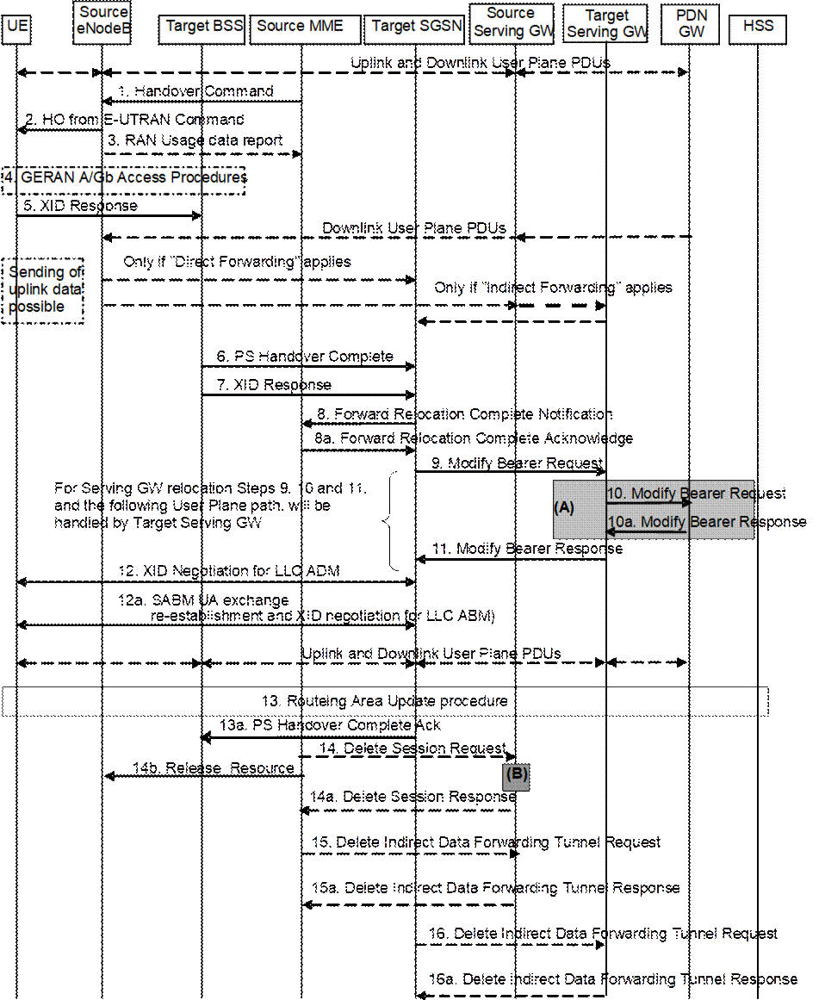
Figure 5.5.2.3.3-1: E-UTRAN to GERAN A/Gb mode Inter RAT HO, execution phase
NOTE 1: For a PMIP-based S5/S8, procedure steps (A) and (B) are defined in TS 23.402 [2]. Step (B) shows PCRF interaction in the case of PMIP-based S5/S8. Steps 10 and 10a concern GTP based S5/S8
The source eNodeB continues to receive downlink and uplink user plane PDUs.
1. The Source MME completes the preparation phase towards Source eNodeB by sending the message Handover Command (Target to Source Transparent Container (PS Handover Command with RN part and EPC part), E‑RABs to Release List, Bearers Subject to Data Forwarding List), S1AP Cause. The "Bearers Subject to Data forwarding list" may be included in the message and it shall be a list of 'Address(es) and TEID(s) for user traffic data forwarding' received from target side in the preparation phase (Step 7 of the preparation phase for Direct Forwarding, else parameters received in Step 8a of the preparation phase). S1AP Cause indicates the RAN Cause as received from the target SGSN.
Source eNodeB initiate data forwarding for the bearers specified in the "Bearers Subject to Data Forwarding List". The data forwarding may go directly i.e. to target SGSN or alternatively go via the Serving GW if so decided by source MME and/or target SGSN in the preparation phase.
2. The Source eNodeB will give a command to the UE to handover to the Target Access System via the message HO from E-UTRAN Command. This message includes a transparent container including radio aspect parameters that the Target BSS has set-up in the preparation phase (RN part). This message also includes the XID and IOV-UI parameters received from the Target SGSN (EPC part).
Upon the reception of the HO from E-UTRAN Command message containing the Handover Command message, the UE shall associate its bearer IDs to the respective PFIs based on the relation with the NSAPI and shall suspend the uplink transmission of the user plane data.
3. If the PLMN has configured Secondary RAT usage data reporting and the source eNodeB has Secondary RAT usage data to report, the eNodeB sends the RAN Usage data report message (Secondary RAT usage data) to the MME. Since the handover is an inter-RAT handover, the MME continues with the Secondary RAT usage data reporting procedure as in clause 5.7A.3. The reporting procedure in clause 5.7A.3 is only performed if PGW secondary RAT usage reporting is active.
4. The UE moves to the Target GERAN A/Gb (2G) system and performs executes the handover according to the parameters provided in the message delivered in step 2. The procedure is the same as in step 6 in clause 5.3.2.2 in TS 43.129 [8] with the additional function of association of the received PFI and existing Bearer Id related to the particular NSAPI.
5. After accessing the cell using access bursts and receiving timing advance information from the BSS in step 4, the UE processes the NAS container and then sends one XID response message to the target SGSN via target BSS. The UE sends this message immediately after receiving the Packet Physical Information message containing the timing advance or, in the synchronised network case, immediately if the PS Handover Access message is not required to be sent.
Upon sending the XID Response message, the UE shall resume the user data transfer only for those NSAPIs for which there are radio resources allocated in the target cell. For NSAPIs using LLC ADM, for which radio resources were not allocated in the target cell, the UE may request for radio resources using the legacy procedures.
If the Target SGSN indicated XID Reset (i.e. reset to default XID parameters) in the NAS container included in the HO from E-UTRAN Command message, and to avoid collision cases the mobile station may avoid triggering XID negotiation for any LLC SAPI used in LLC ADM, but wait for the SGSN to do so (see step 12). In any case the mobile station may avoid triggering XID negotiation for any LLC SAPI used in LLC ABM, but wait for the SGSN to do so (see step 12a).
This step is the same as specified in clause 5.3.2.2 in TS 43.129 [8].
6. Upon reception of the first correct RLC/MAC block (sent in normal burst format) from the UE to the Target BSS, the Target BSS informs the Target SGSN by sending the message PS Handover Complete (IMSI, and Local TLLI, Request for Inter RAT Handover Info). The target BSS that supports inter-RAT PS handover to UTRAN shall, when the INTER RAT HANDOVER INFO was not included in the Source BSS to Target BSS transparent container received in the PS HANDOVER REQUEST message as specified in TS 48.018 [42], request the INTER RAT HANDOVER INFO from the target SGSN by setting the 'Request for Inter RAT Handover Info' to '1'.
7. The Target BSS also relays the message XID Response to the Target SGSN. Note, the message in step 6 and 7 may arrive in any order in the Target SGSN.
8. Then the Target SGSN knows that the UE has arrived to the target side and Target SGSN informs the Source MME by sending the Forward Relocation Complete Notification (ISR Activated, Serving GW change) message. If ISR Activated is indicated, the source MME shall maintain the UE's contexts and activate ISR, which is only possible when the S‑GW is not changed. The Source MME will also acknowledge that information. A timer in source MME is started to supervise when resources in Source eNodeB and Source Serving GW (for Serving GW relocation) shall be released.
Upon receipt of the Forward Relocation Complete Acknowledge message the target SGSN starts a timer if the target SGSN allocated S‑GW resources for indirect forwarding.
For all bearers that were not included in the Forward Relocation Request message sent in step 3, the MME now releases them by sending a Delete Bearer Command to the SGW, or, the appropriate message to the SCEF.
9. The Target SGSN will now complete the Handover procedure by informing the Serving GW (for Serving GW relocation this will be the Target Serving GW) that the Target SGSN is now responsible for all the EPS Bearer Context(s) the UE has established. This is performed in the message Modify Bearer Request (SGSN Tunnel Endpoint Identifier for Control Plane, NSAPI(s), SGSN Address for Control Plane, SGSN Address(es) and TEID(s) for User Traffic for the accepted EPS bearers and RAT type, ISR Activated) per PDN connection. As it is a mobility from E-UTRAN, if the target SGSN supports location information change reporting, the target SGSN shall include the User Location Information (according to the supported granularity) in the Modify Bearer Request, regardless of whether location information change reporting had been requested in the previous RAT by the PDN GW. If the PDN GW requested User CSG information (determined from the UE context), the SGSN also includes the User CSG Information IE in this message. If the UE Time Zone has changed, the SGSN includes the UE Time Zone IE in this message. If Serving GW is not relocated but the Serving Network has changed or if the SGSN has not received any old Serving Network information from the old MME, the SGSN includes the new Serving Network IE in this message. In network sharing scenarios Serving Network denotes the serving core network. If indicated, ISR Activated indicates that ISR is activated, which is only possible when the S‑GW was not changed. When the Modify Bearer Request does not indicate ISR Activated and S‑GW is not changed, the S‑GW deletes any ISR resources by sending a Delete Bearer Request to the other CN node that has bearer resources on the S‑GW reserved.
The SGSN releases the non-accepted EPS Bearer contexts by triggering the EPS Bearer context deactivation procedure. If the Serving GW receives a DL packet for a non-accepted bearer, the Serving GW drops the DL packet and does not send a Downlink Data Notification to the SGSN.
10. The Serving GW (for Serving GW relocation this will be the Target Serving GW) may inform the PDN GW the change of, for example, for Serving GW relocation or the RAT type, that e.g. can be used for charging, by sending the message Modify Bearer Request per PDN connection. The S‑GW also includes User Location Information IE and/or UE Time Zone IE and/or User CSG Information IE if they are present in step 9. Serving Network should be included if it is received in step 9 or in step 4 in clause 5.5.2.3.2. For Serving GW relocation, the Serving GW allocates DL TEIDs on S5/S8 even for non-accepted bearers and may include the PDN Charging Pause Supported Indication. The PDN GW must acknowledge the request with the message Modify Bearer Response. In the case of Serving GW relocation, the PDN GW updates its context field and returns a Modify Bearer Response (Charging Id, MSISDN, PDN Charging Pause Enabled Indication (if PDN GW has chosen to enable the function), etc.) message to the Serving GW. The MSISDN is included if the PDN GW has it stored in its UE context. If location information change reporting is required and supported in the target SGSN, the PDN GW shall provide MS Info Change Reporting Action in the Modify Bearer Response.
If PCC infrastructure is used, the PDN GW informs the PCRF about the change of, for example, the RAT type.
If the Serving GW is relocated, the PDN GW shall send one or more "end marker" packets on the old path immediately after switching the path. The source Serving GW shall forward the "end marker" packets to the source eNodeB.
11. The Serving GW (for Serving GW relocation this will be the Target Serving GW) acknowledges the user plane switch to the Target SGSN via the message Modify Bearer Response (Cause, Serving GW Tunnel Endpoint Identifier for Control Plane, Serving GW Address for Control Plane, Protocol Configuration Options, MS Info Change Reporting Action). At this stage the user plane path is established for all EPS Bearer contexts between the UE, Target BSS, Target SGSN, Serving GW (for Serving GW relocation this will be the Target Serving GW) and PDN GW.
If the Serving GW does not change, the Serving GW shall send one or more "end marker" packets on the old path immediately after switching the path.
12. If the Target SGSN indicated XID Reset (i.e. reset to default XID parameters) in the NAS container included in the HO from E-UTRAN Command message, then on receipt of the PS Handover Complete the Target SGSN initiates an LLC/SNDCP XID negotiation for each LLC SAPI used in LLC ADM. In this case if the Target SGSN wants to use the default XID parameters, it shall send an empty XID Command. If the Target SGSN indicated 'Reset to the old XID parameters' in the NAS container, no further XID negotiation is required for LLC SAPIs used in LLC ADM only.
12a. The Target SGSN (re-)establishes LLC ABM for the EPS Bearer contexts which use acknowledged information transfer. During the exchange of SABM and UA the SGSN shall perform LLC/SNDCP XID negotiation.
These steps (12 and 12a) are the same as specified in clause 5.3.2.2 in TS 43.129 [8].
13. After the UE has finished the reconfiguration procedure the UE shall initiate the Routing Area Update procedure.
NOTE 2: The RAU procedure is performed regardless if the UE has this routing area registered or not, as specified by TS 43.129 [8]. This is needed e.g. to update the START-PS value stored in the 2G-SGSN. The START_PS is delivered to SGSN in INTER RAT HANDOVER INFO parameter of RAU Complete message when requested by SGSN in RAU Accepted.
The target SGSN knows that an IRAT Handover has been performed for this UE as it received the bearer context(s) by handover messages and therefore the target SGSN performs only a subset of the RAU procedure, specifically it excludes the context transfer procedures between source MME and target SGSN.
For a UE supporting CIoT EPS Optimisations, the UE uses the bearer status information in the RAU Accept to identify any non-transferred bearers that it shall locally release.
13a. Upon reception of the PS Handover Complete message with the 'Request for Inter RAT Handover Info' set to '1', the SGSN should send then PS Handover Complete Acknowledge (TLLI, INTER RAT HANDOVER INFO) to the target BSS.
NOTE 3: An SGSN that does not recognize the "Request for Inter RAT Handover Info" in the PS Handover Complete message will not send the PS Handover Complete Acknowledge message back to the BSS.
The target BSS receiving the PS Handover Complete Acknowledge message shall set the 'Reliable INTER RAT HANDOVER' to '1' in the PS Handover Required message in any subsequent PS handover to GERAN A/Gb mode. The target BSS failing to receive the PS Handover Complete Acknowledge message shall set the 'Reliable INTER RAT HANDOVER' to '0' in the PS Handover Required message in any subsequent PS handover to GERAN A/Gb mode. The Target BSS shall, upon receipt of the INTER RAT HANDOVER INFO in the PS Handover Complete Acknowledge message, overwrite its current INTER RAT HANDOVER INFO with this new one.
14. When the timer started at step 8 expires, the source MME sends a Release Resources message to the source eNodeB. The Source eNodeB releases its resources related to the UE.
When the timer started in step 8 expires and if the source MME received the Serving GW change indication in the Forward Relocation Response message, it deletes the EPS bearer resources by sending Delete Session Request (Cause, Operation Indication, Secondary RAT usage data) messages to the Source Serving GW. The operation Indication flag is not set, that indicates to the Source Serving GW that the Serving GW changes and the Source Serving GW shall not initiate a delete procedure towards the PDN GW. Secondary RAT usage data is included if it was received in step 3. The Source Serving GW acknowledges with Delete Session Response (Cause) messages. If ISR has been activated before this procedure, the cause indicates to the Source S‑GW that the Source S‑GW shall delete the bearer resources on the other old CN node by sending Delete Bearer Request message(s) to that CN node.
15. If indirect forwarding was used then the expiry of the timer at source MME started at step 8 triggers the source MME to send a Delete Indirect Data Forwarding Tunnel Request message to the S‑GW to release the temporary resources used for indirect forwarding.
16. If indirect forwarding was used and the Serving GW is relocated, then the expiry of the timer at target SGSN started at step 8 triggers the target SGSN to send a Delete Indirect Data Forwarding Tunnel Request message to the target S‑GW to release temporary resources used for indirect forwarding.
The Target BSS may reject the use of the
Handover procedure if none of the requested PFCs in the PS Handover Request
message could be established. In this case no UE context is established in the
target SGSN/BSS and no resources are allocated. The UE remains in the Source
eNodeB/MME.
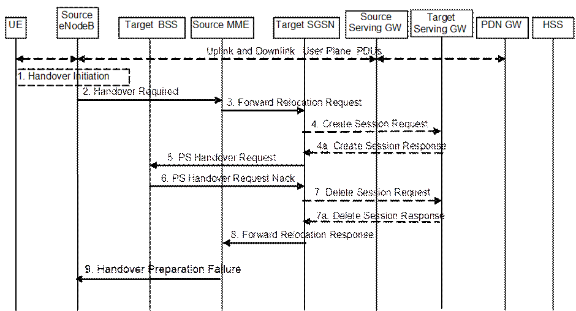
Figure 5.5.2.3.4-1: E-UTRAN to GERAN A/Gb Inter RAT HO reject
1. Steps 1 to 5 in the flow are identical to the ones in clause 5.5.2.3.2.
6. If the Target BSS fails to allocate any resources for any of the requested PFCs it sends a PS Handover Request Nack (Cause) message to the Target SGSN. When the Target SGSN receives the PS Handover Request Nack message from Target BSS the Target SGSN clears any reserved resources for this UE.
7. This step is only performed for Serving GW relocation, i.e. if Steps 4/4a have been performed. The Target SGSN deletes the EPS bearer resources by sending Delete Session Request (Cause) messages to the Target Serving GW. The Target Serving GW acknowledges with Delete Session Response (Cause) messages.
8. The Target SGSN sends the Forward Relocation Response (Cause) message to the Source MME.
9. When the Source MME receives the Forward Relocation Response message it send a Handover Preparation Failure (Cause) message to the Source eNodeB.
The procedure is based on Packet-switched handover for GERAN A/Gb mode, defined in TS 43.129 [8].
Pre-conditions:
- The UE is in READY state (GERAN A/Gb mode);
- The UE has at least one PDP/EPS Bearer Context established;
- The BSS must support PFM, Packet Flow Management, procedures.
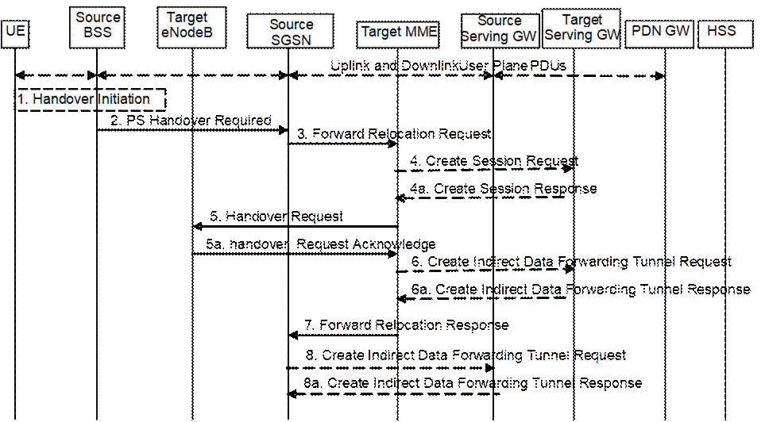
Figure 5.5.2.4.2-1: GERAN A/Gb mode to E-UTRAN inter RAT HO, preparation phase
1. The source access system, Source BSS, decides to initiate an Inter-RAT Handover to the E-UTRAN. At this point both uplink and downlink user data is transmitted via the following: Bearers between UE and Source BSS, BSSGP PFC tunnel(s) between source BSS and source SGSN, GTP tunnel(s) between Source SGSN, Serving GW and PDN GW.
NOTE 1: The process leading to the handover decision is outside of the scope of this specification.
2. The source BSS sends the message PS handover Required (TLLI, Cause, Source Cell Identifier, Target eNodeB Identifier, Source eNodeB to Target eNodeB Transparent Container and active PFCs list) to Source SGSN to request the CN to establish resources in the Target eNodeB, Target MME and the Serving GW.
NOTE 2: In contrast to most inter-RAT handover preparation phases, this Source to Target Transparent Container does not contain the UE's target RAT radio capabilities.
3. The Source SGSN determines from the 'Target eNodeB Identifier' IE that the type of handover is IRAT PS Handover to E-UTRAN. The Source SGSN selects the Target MME as described in clause 4.3.8.3 on "MME Selection Function". The Source SGSN initiates the Handover resource allocation procedure by sending message Forward Relocation Request (IMSI, Target Identification, MM Context, PDN Connections, SGSN Tunnel Endpoint Identifier for Control Plane, SGSN Address for Control plane, Source to Target Transparent Container, RAN Cause, Packet Flow ID, SNDCP XID parameters, LLC XID parameters, MS Info Change Reporting Action (if available), CSG Information Reporting Action (if available), UE Time Zone, ISR Supported, Serving Network) to the target MME. When ISR is activated the message should be sent to the MME that maintains ISR for the UE when this MME is serving the target identified by the Target Identification. If indicated, the information ISR Supported indicates that the source SGSN and associated Serving GW are capable to activate ISR for the UE. This message includes all PDN Connections active in the source system and for each PDN Connection includes the associated APN, the address and the uplink tunnel endpoint parameters of the Serving GW for control plane, and a list of EPS Bearer Contexts established in the source system. The EPS Bearer Contexts indicate the PFIs and the XID parameters related to those EPS Bearer Contexts, and the uplink Tunnel endpoint parameters of the Serving GW. The old Serving Network is sent to target MME to support the target MME to resolve if Serving Network is changed. In network sharing scenarios Serving Network denotes the serving core network.
The RAN Cause includes the value from the Cause IE received from the source BSS. Source to Target Transparent Container includes the value from the Source eNodeB to Target eNodeB Transparent Container received from the source BSS.
The MM context includes information on the EPS Bearer context(s). If none of the UE's EPS Bearers can be supported by the selected target MME, the source SGSN rejects the handover attempt by sending a PS Handover Required Negative Acknowledge (Cause) message to the Source BSS.
NOTE 3: If the handover is successful, the source SGSN will signal to the SGW and/or SCEF to release any non-included EPS Bearers after step 6 of the Execution procedure. The non-included bearers are locally released by the UE following the Bearer Context Status synchronisation that occurs during the Tracking Area Update at step 12 of the Execution procedure.
Prioritization of EPS Bearer Contexts is performed by the target core network node.
The MME establishes the EPS bearer(s) in the prioritized order. The MME deactivates, as provided in step 8 of the execution phase, the EPS bearers which cannot be established.
The MM context contains security related information, e.g. supported ciphering algorithms as described in TS 29.274 [43]. Handling of security keys is described in TS 33.401 [41].
For the EPS Bearer Context with traffic class equals 'Background', the source SGSN shall indicate via the Activity Status Indicator IE that radio bearers shall be established on the target side.
The target MME shall determine the Maximum APN restriction based on the APN Restriction of each bearer context received in the Forward Relocation Request, and shall subsequently store the new Maximum APN restriction value.
4. The target MME determines if the Serving GW is to be relocated, e.g. due to PLMN change. If the Serving GW is to be relocated, the target MME selects the target Serving GW as described under clause 4.3.8.2 on "Serving GW selection function". The target MME sends a Create Session Request message (IMSI, MME Tunnel Endpoint Identifier for Control Plane, MME Address for Control plane, PDN GW address(es) for user plane, PDN GW UL TEID(s) for user plane, PDN GW address for control plane, and PDN GW TEID(s) for control plane, the Protocol Type over S5/S8, Serving Network) per PDN connection to the target Serving GW. The Protocol Type over S5/S8 is provided to Serving GW which protocol should be used over S5/S8 interface.
4a. The target Serving GW allocates its local resources and returns them in a Create Session Response (Serving GW address(es) for user plane, Serving GW UL TEID(s) for user plane, Serving GW Address for control plane, Serving GW TEID for control plane) message to the target MME.
5. The Target MME will request the Target eNodeB to establish the Bearer(s) by sending the message Handover Request (UE Identifier, S1AP Cause, Integrity protection information (i.e. IK and allowed Integrity Protection algorithms), Encryption information (i.e. CK and allowed Ciphering algorithms), EPS Bearers to be setup list, Source to Target Transparent Container, Handover Restriction List). The Target MME ignores any Activity Status Indicator within an EPS Bearer Context and requests the eNodeB to allocate resources for all EPS Bearer Contexts received from the source side. The S1AP Cause includes the value from the RAN Cause IE received from the source SGSN. The target eNodeB shall ignore it if the number of radio bearers in the Source to Target Transparent container does not comply with the number of bearers requested by the MME and allocate bearers as requested by the MME. Handover Restriction List is sent if it is available in the Target MME; it is described in clause 4.3.5.7.
For each EPS bearer requested to be established, 'EPS Bearers To Be Setup' IE shall contain information such as ID, bearer parameters, Transport Layer Address, "Data forwarding not possible" indication, and S1 Transport Association. The Transport Layer Address is the Serving GW Address for user data, and the S1 Transport Association corresponds to the uplink Tunnel Endpoint Identifier Data. "Data forwarding not possible" indication shall be included if the target MME decides the corresponding bearer will not be subject to data forwarding.
The ciphering and integrity protection keys will be sent transparently from the target eNodeB to the UE in the Target to Source Transparent Container, and in the message PS Handover Command from source BSS to the UE. This will then allow data transfer to continue in the new RAT/mode target cell without requiring a new AKA (Authentication and Key Agreement) procedure. More details are described in TS 33.401 [41].
5a. The Target eNodeB allocates the request resources and returns the applicable parameters to the Target MME in the message Handover Request Acknowledge (Target to Source Transparent Container, S1AP Cause, EPS Bearers setup list, EPS Bearers failed to setup list). Upon sending the Handover Request Acknowledge message the target eNodeB shall be prepared to receive downlink GTP PDUs from the Serving GW for the accepted EPS bearers.
6. If 'Indirect Forwarding' and relocation of Serving GW apply, the target MME sends a Create Indirect Data Forwarding Tunnel Request message (Target eNodeB Address(es) and TEID(s) for DL data forwarding) to the Serving GW.
Indirect forwarding may be performed via a Serving GW which is different from the Serving GW used as the anchor point for the UE.
6a. The Serving GW returns a Create Indirect Data Forwarding Tunnel Response (Cause, Serving GW Address(es) and DL TEID(s) for data forwarding) message to the target MME.
7. The Target MME sends the message Forward Relocation Response (Cause, List of Set Up PFCs, MME Tunnel Endpoint Identifier for Control Plane, RAN Cause, MME Address for control plane, Target to Source Transparent Container, Address(es) and TEID(s) for Data Forwarding, Serving GW change indication) to the Source SGSN. Serving GW change indication indicates whether a new Serving GW has been selected. The RAN Cause includes the value from the S1AP Cause IE received from the target eNodeB. The Target to Source Transparent Container includes the value from the Target to Source Transparent Container received from the target eNodeB.
If 'Direct Forwarding' applies or if 'Indirect Forwarding' but no relocation of Serving GW applies, then the IEs 'Address(es) and TEID(s) for Data Forwarding' contain the DL GTP-U tunnel endpoint parameters to the eNodeB received in step 5a. If 'Indirect Forwarding' and relocation of Serving GW apply the IEs 'Address(es) and TEID(s) for Data Forwarding' contain the DL GTP-U tunnel endpoint parameters to the Serving GW received in step 6a.
8. If 'Indirect Forwarding' applies, the source SGSN shall send the message Create Indirect Data Forwarding Tunnel Request (Address(es) and TEID(s) for Data Forwarding (received in step 7)) to the Serving GW used for indirect packet forwarding.
Indirect forwarding may be performed via a Serving GW which is different from the Serving GW used as the anchor point for the UE.
8a. The Serving GW returns the forwarding user plane parameters by sending the message Create Indirect Data Forwarding Tunnel Response (Cause, Serving GW Address(es) and TEID(s) for Data Forwarding). If the Serving GW doesn't support data forwarding, an appropriate cause value shall be returned and the Serving GW Address(es) and TEID(s) will not be included in the message.
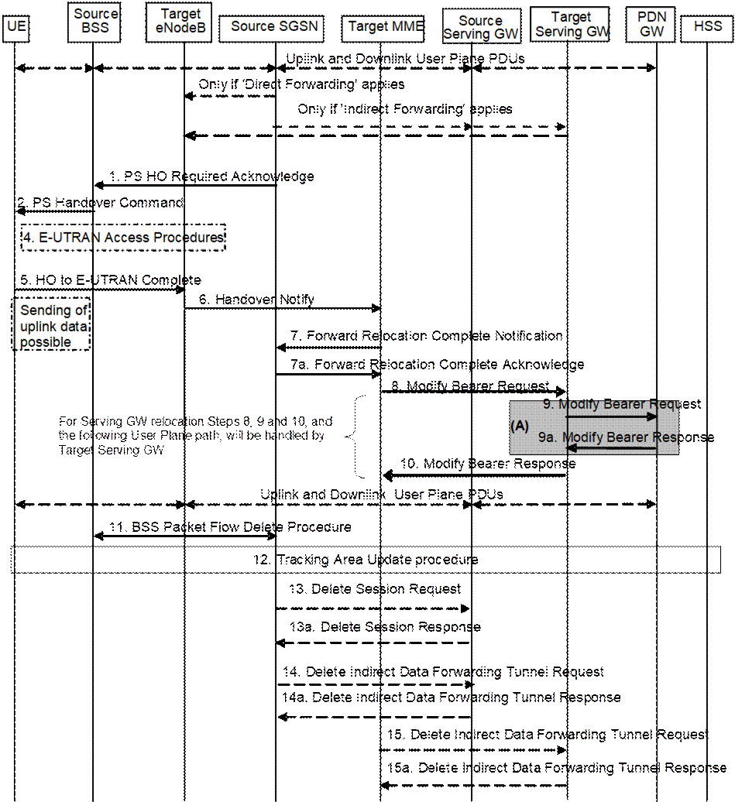
Figure 5.5.2.4.3-1: GERAN A/Gb mode to E-UTRAN Inter RAT HO, execution phase
NOTE: For a PMIP-based S5/S8, procedure steps (A) are defined in TS 23.402 [2]. Steps 9 and 9a concern GTP based S5/S8.
The source SGSN continues to receive downlink and uplink user plane PDUs.
When source SGSN receives the Forward Relocation Response message it may start downlink N-PDU relay and duplication to the target eNodeB (for Direct Forwarding) or via the Serving GW (for Indirect Forwarding), and the target eNodeB may start blind transmission of downlink user data towards the UE over the allocated radio channels.
1. The Source SGSN completes the preparation phase towards Source BSS by sending the message PS HO Required Acknowledge (TLLI, List of Set Up PFCs, Target RNC to Source BSS Transparent Container, Cause). This message includes all PFIs that could be established on the Target side. The Cause includes the value from the RAN Cause IE received from the target MME. The Target RNC to Source BSS Transparent Container includes the value from the Target to Source Transparent Container received from the target MME.
Before sending the PS Handover Required Acknowledge message, the source SGSN may suspend downlink data transfer for any EPS Bearer contexts.
Before sending the PS Handover Command message to the UE the source BSS, may try to empty the downlink BSS buffer for any BSS PFCs.
2. The Source BSS will command the UE to handover to the target eNodeB via the message PS Handover Command. The access system specific message to UE includes a transparent container including radio aspect parameters that the Target eNodeB has set-up in the preparation phase.
3. Void.
4. The UE moves to the E-UTRAN and performs access procedures toward Target eNodeB.
5. When the UE has got access to Target eNodeB
it sends the message HO to E-UTRAN Complete.
The UE shall implicitly derive the EPS bearers for which an E-RAB was not
established from the PS Handover Command and deactivate them locally without an
explicit NAS message at this step.
6. When the UE has successfully accessed the Target eNodeB, the Target eNodeB informs the Target MME by sending the message Handover Notify (TAI+ECGI). As a separate activity the Target eNodeB retrieves the UE E-UTRA capability information using the procedure for UE Radio Capability Handling (see clause 5.11.2).
If Dual Connectivity is activated for the UE, the PSCell ID shall be included in the Handover Notify message.
7. Then the Target MME knows that the UE has arrived to the target side and Target MME informs the Source SGSN by sending the Forward Relocation Complete Notification (ISR Activated, Serving GW change) message. If indicated, ISR Activated indicates to the source SGSN that it shall maintain the UE's contexts and activate ISR, which is only possible when the S‑GW is not changed. The Source SGSN shall also acknowledge that information. When the Forward Relocation Complete Notification message has been received and there is no longer any need for the SGSN to forward data, the SGSN stops data forwarding. A timer in source SGSN is started to supervise when resources in the Source Serving GW (for Serving GW relocation) shall be released.
Upon receipt of the Forward Relocation Complete Acknowledge message the target MME starts a timer if the target MME applies indirect forwarding.
8. The Target MME will now complete the Handover procedure by informing the Serving GW (for Serving GW relocation this will be the Target Serving GW) that the Target MME is now responsible for all the EPS bearers the UE have established. This is performed in the message Modify Bearer Request (Cause, MME Tunnel Endpoint Identifier for Control Plane, EPS Bearer ID(s), MME Address for Control Plane, eNodeB Address(es) and TEID(s) for User Traffic for the accepted EPS bearers and RAT type, ISR Activated) per PDN connection. As it is a mobility from GERAN, if the target MME supports location information change reporting, the target MME shall include the User Location Information (according to the supported granularity) in the Modify Bearer Request, regardless of whether location information change reporting had been requested in the previous RAT by the PDN GW. If the PDN GW requested User CSG information (determined from the UE context), the MME also includes the User CSG Information IE in this message. If the UE Time Zone has changed, the MME includes the UE Time Zone IE in this message. If the Serving GW is not relocated but the Serving Network has changed or if the MME has not received any old Serving Network information from the old SGSN, the MME includes the new Serving Network IE in this message. If indicated, ISR Activated indicates that ISR is activated, which is only possible when the S‑GW was not changed. When the Modify Bearer Request does not indicate ISR Activated and S‑GW is not changed, the S‑GW deletes any ISR resources by sending a Delete Bearer Request to the other CN node that has bearer resources on the S‑GW reserved.
The MME releases the non-accepted dedicated bearers by triggering the bearer release procedure as specified in clause 5.4.4.2. If the Serving GW receives a DL packet for a non-accepted bearer, the Serving GW drops the DL packet and does not send a Downlink Data Notification to the MME.
If the default bearer of a PDN connection has not been accepted by the target eNodeB and there are other PDN connections active, the MME shall handle it in the same way as if all bearers of a PDN connection have not been accepted. The MME releases these PDN connections by triggering the MME requested PDN disconnection procedure specified in clause 5.10.3.
9. The Serving GW (for Serving GW relocation this will be the Target Serving GW) informs the PDN GW(s) the change of, for example, for Serving GW relocation or the RAT type, that e.g. can be used for charging, by sending the message Modify Bearer Request per PDN connection. The S‑GW also includes User Location Information IE and/or UE Time Zone IE and/or User CSG Information IE if they are present in step 8. Serving Network should be included if it is received in step 8 or in step 4 in clause 5.5.2.4.2. For Serving GW relocation, the Serving GW allocates DL TEIDs on S5/S8 even for non-accepted bearers and PDN Charging Pause Support Indication shall be included. The PDN GW must acknowledge the request with the message Modify Bearer Response (Charging Id, MSISDN, PDN Charging Pause Enabled Indication (if PDN GW has chosen to enable the function), etc.) to the Serving GW. If location information change reporting is required and supported in the target MME, the PDN GW shall provide MS Info Change Reporting Action in the Modify Bearer Response.
If PCC infrastructure is used, the PDN GW informs the PCRF about the change of, for example, the RAT type.
If the Serving GW is relocated, the PDN GW shall send one or more "end marker" packets on the old path immediately after switching the path in order to assist the reordering function in the target eNodeB. The source Serving GW shall forward the "end marker" packets to the source SGSN.
10. The Serving GW (for Serving GW relocation this will be the Target Serving GW) acknowledges the user plane switch to the Target MME via the message Modify Bearer Response (Cause, Serving GW Tunnel Endpoint Identifier for Control Plane, Serving GW (for Serving GW relocation this will be the Target Serving GW) Address for Control Plane, Protocol Configuration Options, MS Info Change Reporting Action). At this stage the user plane path is established for all bearers between the UE, Target eNodeB, Serving GW (for Serving GW relocation this will be the Target Serving GW) and PDN GW.
If the Serving GW does not change, the Serving GW shall send one or more "end marker" packets on the old path immediately after switching the path in order to assist the reordering function in the target eNodeB.
11. When the timer at the source SGSN started in step 7 expires the Source SGSN will clean-up all its resources towards Source BSS by performing the BSS Packet Flow Delete procedure.
12. The UE initiates a Tracking Area Update procedure when one of the conditions listed in clause "Triggers for tracking area update" applies.
The target MME knows that an IRAT Handover has been performed for this UE as it received the bearer context(s) by handover messages and therefore the target MME performs only a subset of the TA update procedure, specifically it excludes the context transfer procedures between source SGSN and target MME.
If the Subscription Data received from the HSS (during the TAU in step 12) contains information that is necessary for the E-UTRAN to be aware of (e.g. a restriction in the UE's permission to use NR as a secondary RAT, Unlicensed Spectrum or a combination of them), or an existing UE context in the MME indicates that the UE is not permitted to use NR as a secondary RAT, Unlicensed Spectrum or a combination of them and the MME has not provided this information to the target eNodeB during step 5 of the handover preparation phase, then the MME sends an updated Handover Restriction List in the Downlink NAS Transport message that it sends to E-UTRAN. If the UE is not allowed to use NR as Secondary RAT, the MME indicates that to the UE in TAU Accept message.
13. When the timer at the source SGSN started in step 7 expires and if the source SGSN received the Serving GW change indication in the Forward Relocation Response message, it deletes the EPS bearer resources by sending Delete Session Request (Cause, Operation Indication) messages to the Source Serving GW. The operation Indication flag is not set, that indicates to the Source Serving GW that the Source Serving GW shall not initiate a delete procedure towards the PDN GW. The Source Serving GW acknowledges with Delete Session Response (Cause) messages. If ISR has been activated before this procedure, the cause indicates to the Source S‑GW that the Source S‑GW shall delete the bearer resources on the other old CN node by sending Delete Bearer Request message(s) to that CN node.
14. If indirect forwarding was used then the expiry of the timer at source SGSN started at step 7 triggers the source SGSN to send a Delete Indirect Data Forwarding Tunnel Request message to the S‑GW to release the temporary resources used for indirect forwarding.
15. If indirect forwarding was used and the Serving GW is relocated, then the expiry of the timer at target MME started at step 6 triggers the target MME to send a Delete Indirect Data Forwarding Tunnel Request message to the target S‑GW to release temporary resources used for indirect forwarding.
The Target eNodeB may reject the use of the
Handover procedure if none of the requested EPS bearers in the Handover Request
message could be established. In this case no UE context is established in the
target MME/eNodeB and no resources are allocated. The UE remains in the Source
BSS/SGSN.
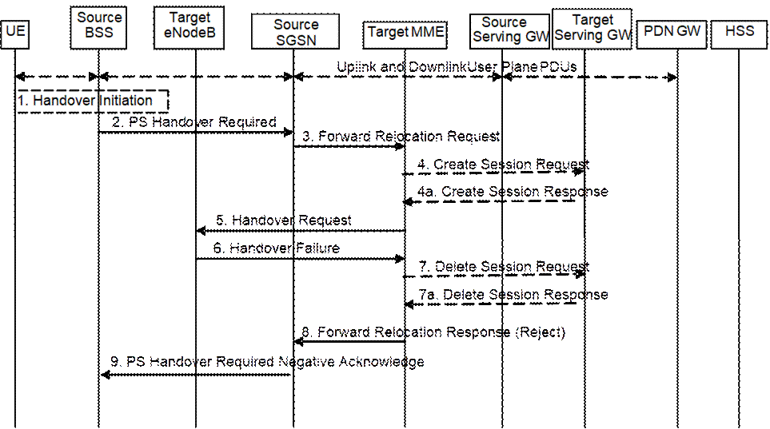
Figure 5.5.2.4.4-1: GERAN A/Gb mode to E-UTRAN inter RAT HO reject
1. Steps 1 to 5 in the flow are identical to the ones in clause 5.5.2.4.2.
6. If the Target eNodeB fails to allocate any resources for any of the requested EPS Bearers it sends a Handover Failure (Cause) message to the Target MME. When the Target MME receives the Handover Failure message from Target eNodeB the Target MME clears any reserved resources for this UE.
7. This step is only performed for Serving GW relocation, i.e. if Steps 4/4a have been performed. The Target MME deletes the EPS bearer resources by sending Delete Session Request (Cause) messages to the Target Serving GW. The Target Serving GW acknowledges with Delete Session Response (Cause) messages.
8. The Target MME sends the Forward Relocation Response (Cause) message to the Source SGSN.
9. When the Source SGSN receives the Forward Relocation Response message it send a PS Handover Required Negative Acknowledge (Cause) message to the Source BSS.
Instead of completing the handover procedure, the source RAN node (eNodeB,
RNC or BSS) may at any time during the handover procedure, up to the time when
a handover command message is sent to the UE cancel the handover. The reason
for cancelling may be e.g. due to a timer expiration or due to other events
within the source RAN node and is initiated by sending a handover cancel PDU to
the source EPC node (MME or SGSN).
A handover cancel PDU shall also be sent by the source RAN node after a
handover command message is sent to the UE for the case where the handover
fails and the UE returns to the old cell or radio contact with the UE is lost.
This is done in order to release the resources reserved for the Handover in the
target system.
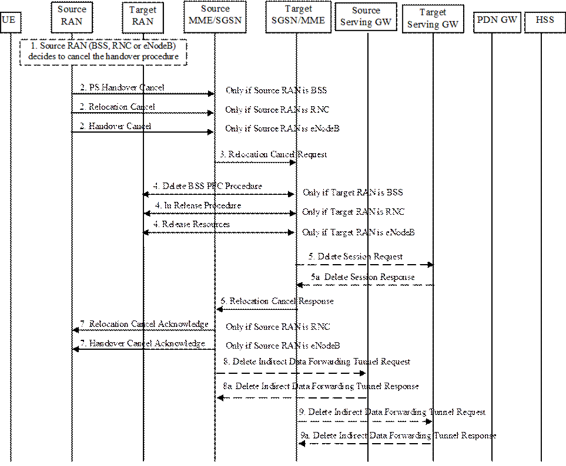
Figure 5.5.2.5.2-1: Inter RAT handover Cancel
1. The source RAN decides to cancel the previously requested relocation of Handover resources. This may be due to not enough accepted bearers, UE returned to source cell or any other reason.
2. The source RAN sends a Cancel message with a Cause to the source EPC node (SGSN or MME). If the source RAN is:
a) BSS the message sent is PS Handover Cancel (Cause),
b) RNC the message sent is Relocation Cancel (Cause), or
c) eNodeB the message sent is Handover Cancel (Cause).
3. The source EPC node terminates the relocation towards the target side by sending a Relocation Cancel Request (IMSI) message to the target EPC node. The Source EPC node also resumes operation on the resources in the source side.
4. The target EPC node triggers the release of resources in the target RAN and also releases its own resources allocated for this handover.
5. This step is only performed for Serving GW relocation. The Target EPC node deletes the EPS bearer resources by sending Delete Session Request (Cause) messages to the Target Serving GW. The Target Serving GW acknowledges with Delete Session Response (Cause) messages.
6. The target EPC node acknowledge the release of all resources on the target side by returning a Relocation Cancel Response (Cause) message to the source EPC node.
7. The source EPC node returns a Cancel acknowledge message to the source RAN. If the source RAN is:
a) BSS there will be no acknowledge message sent to the source BSS,
b) RNC the message sent is Relocation Cancel Acknowledge (Cause), or
c) eNodeB the message sent is Handover Cancel Acknowledge (Cause).
8. If indirect forwarding tunnel is setup during handover preparation then cancellation of handover triggers the source MME/SGSN to send a Delete Indirect Data Forwarding Tunnel Request message to the S‑GW to release the temporary resources used for indirect forwarding.
9. If indirect forwarding tunnel is setup during handover preparation and serving GW is relocated then cancellation of handover triggers the target MME/SGSN to send a Delete Indirect Data Forwarding Tunnel Request message to the S‑GW to release the temporary resources used for indirect forwarding.